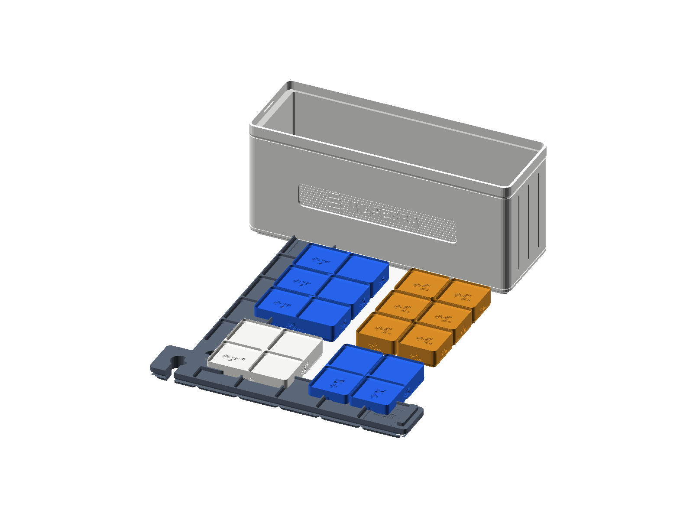
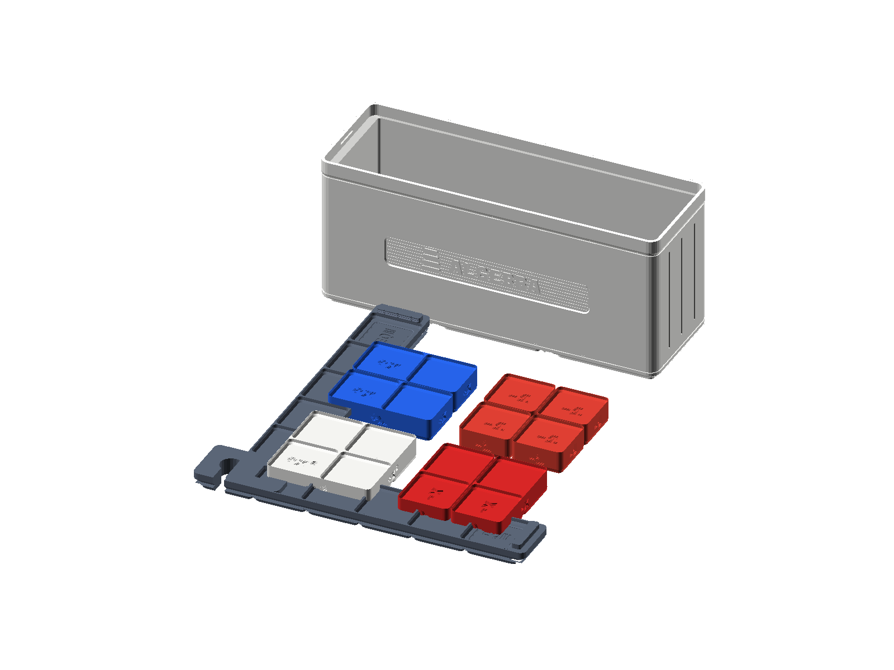
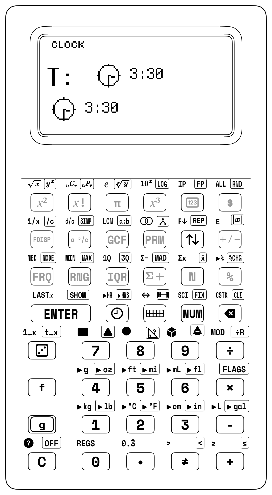
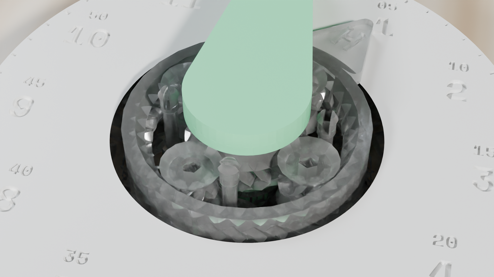
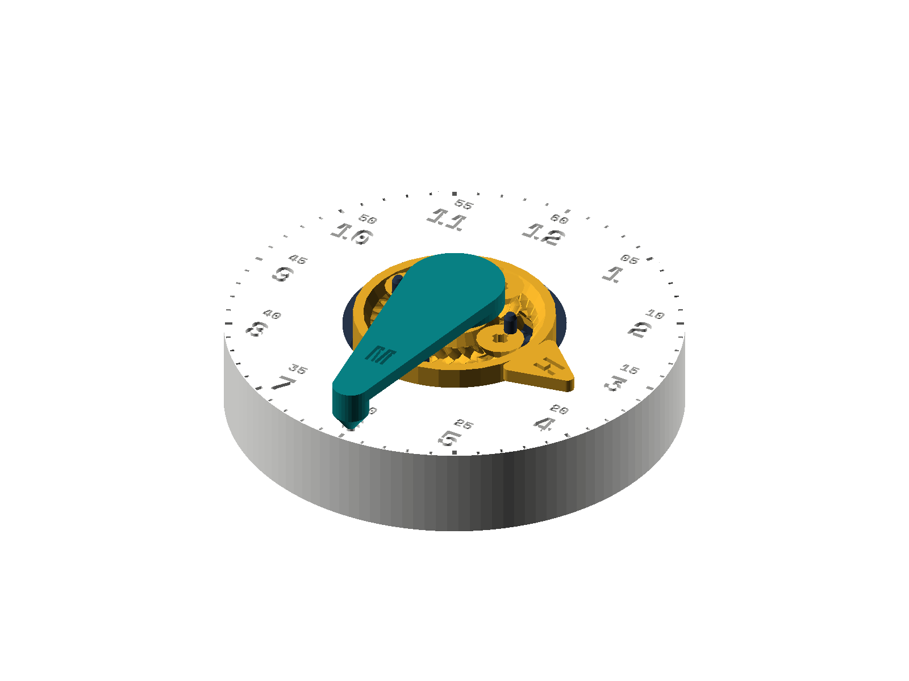

Chapter 6: Shapes, 3D Boxes & Geared Clock Time
6.1 Galileo's Square-Cube Law & Your 3D Geometry Studio
Out on the Antarctic ice shelf in the middle of winter, the air temperature plummets to \(-40^\circ\text{C}\) as howling gale-force blizzards blast across the frozen tundra at \(100\text{ km/h}\). Standing directly in that polar gale are thousands of Emperor penguins and their newborn chicks—surviving without shelter, fire, or blankets by relying on one of the deepest geometric laws in the physical universe.
An adult Emperor penguin weighs \(35\text{ kg}\), but a baby chick weighs under \(1\text{ kg}\). Why does an isolated chick freeze in under 10 minutes, while an adult stands calmly against the polar gale?
6.1.1 Inside Heat vs. Outside Skin
First discovered by Galileo Galilei in 1638 as the Square-Cube Law (Galilei, 1638), every living creature's survival in the cold comes down to a tug-of-war between two measurements: - Volume is the space inside an animal's body where it makes and holds onto body heat (matching how much body weight it has inside). - Surface Area is the outer skin and feathers where heat leaks out into the freezing wind.
A fluffy baby chick has a huge amount of outer skin (surface area) compared to its tiny body inside (volume), so heat escapes into the howling wind far faster than the chick's little heart and body can make more warmth. When Antarctic wildlife scientists tracked Emperor penguin colonies through the winter (Gilbert et al., 2006), they saw how the penguins beat that math: hundreds of penguins press tightly together shoulder-to-shoulder into a slowly turning six-sided huddle.
All at once, their outer feathers aren't touching \(-40^\circ\text{C}\) wind anymore—they are pressed against warm neighbors. To the freezing blizzard, 500 huddled chicks act like one giant warm creature. Together they have a huge heat-making volume inside, while almost all of their outer skin is tucked safely out of the wind. Right in the middle of the slowly turning huddle, the air warms all the way up to a comfortable \(+20^\circ\text{C}\) while the storm rages at \(-40^\circ\text{C}\) outside. Geometry literally keeps the colony alive.
6.1.2 Prove the Penguin Huddle Yourself with 8 Unit Miniblocks
Grab 8 Unit Miniblocks (\(19.0 \times 19.0 \times 7.0\text{ mm}\) blocks) from your Counting & Array Studio or Place Value Studio: - Standing Alone in the Wind: Spread the 8 blocks apart on your desk like 8 lone penguin chicks. Every block has 6 exposed faces touching the cold air, so all 8 blocks expose \(8 \times 6 = \mathbf{48\text{ outer block faces}}\) of skin. - Pressed Together in a \(2 \times 2 \times 2\) Huddle: Now dock all 8 blocks tightly together into a single \(2 \times 2 \times 2\) block box (four \(2\text{-block}\) towers sitting side-by-side in a \(2 \times 2\) square). The total volume is still 8 blocks, but half the walls are now tucked warmly on the inside. Each of the 6 outer sides is just a \(2 \times 2 = 4\text{-face}\) wall—only \(6 \times 4 = \mathbf{24\text{ exposed faces}}\). Half of their cold surface area (\(\mathbf{-50\%}\)) disappeared inside the huddle:
| Keystroke | Register T | Register Z | Register Y | Register X | What Happens on the Stack |
|---|---|---|---|---|---|
8 [ENTER] 6 [×] |
0 | 0 | 0 | 48 | 8 lone cubes \(\times 6\) faces \(= 48\) cold exposed faces |
6 [ENTER] 4 [×] |
0 | 0 | 48 | 24 | \(2 \times 2 \times 2\) huddle has \(6 \times 4 = 24\) exposed faces |
[g] [%CHG] |
0 | 0 | 48 | -50 | Huddling cuts exposed heat-loss area by \(-50\%\) |
6.1.3 The Kitchen-Table Proof: French Fries vs. Baked Potatoes
You see this exact same tug-of-war between volume and surface area every day in the kitchen. Think about The Whole Potato versus The French Fry: a whole baked potato takes 45 to 60 minutes to cook in a \(400^\circ\text{F}\) oven because heat takes a long time to soak through its thick round body to the center, yet if you slice that exact same potato into thin French-fry strips, it fries crispy golden-brown in just 3 minutes! Slicing didn't change how much potato you have (the volume)—it multiplied the outer skin touching the hot oil (the surface area) by over 600%. You see the exact same rule in The Ice Cube: one big ice ball melts slowly in a glass of lemonade, while crushed ice chills your drink in 10 seconds because cold surface area is touching the juice everywhere at once.
When you calculate surface area on your SC-6, you are measuring the exact geometric property that controls crispy French fries, fast-melting ice, parachute drag, and how polar animals stay warm in the wild.
6.1.4 Building 3D Boxes, Area Frames & Geared Clocks
Shapes live in three dimensions all around you, and the fastest way to understand them is to build them, unfold them, and turn them in your hands. Throughout this chapter, your SC-6 pairs every flat shape, 3D box, and moving clock hand with physical 3D-printed blocks, L-Frame area tiles, polyhedral game dice, and interlocking clock gears you can snap together on your desk:


To explore flat shapes, 3D boxes, and moving clock angles with your hands, you will use three physical tools from your desk studio alongside your calculator. First, your \(19.0 \times 19.0\text{ mm}\) Stacking Unit Tiles (\(7.0\text{ mm}\) tall per single block, so 3 blocks stand \(21.0\text{ mm}\) tall and 12 blocks build an \(84.0\text{ mm}\) tower) let you build 3D rectangular boxes on the studio lid grid and count all 6 outer walls—and they team up with the 5 classic game dice (\(d4, d6, d8, d12, d20\)) from your Polyhedral Dice set plus the printable cardstock nets in Appendix A that fold into full-scale paper boxes, tents, and cylinders. Second, your \(90^\circ\) Corner L-Frame & Area-Grid Tiles provide interlocking horizontal and vertical guide rails that frame flat 2D rectangles and squares on your desk so you can trace outside perimeters and count interior area tiles at the same time. Third, your Planetary Geared Clock & \(360^\circ\) Unit Circle Volvelle uses a real \(12:1\) planetary gear train (where spinning the minute hand 12 times turns the hour hand once) and four removable \(90^\circ\) quarter-circle wedges inside a \(120\text{ mm}\) degree wheel—matching your SC-6's Planetary Clock mode ([🕒]) and time-conversion keys ([f] [▸HR] and [g] [▸HMS]).
6.1.5 How a 3D Box Unfolds into Three Pairs of Twin Walls
When you build a rectangular box out of Counting Tiles on your studio docking lid—say, a \(5\text{ cm} \times 4\text{ cm} \times 3\text{ cm}\) gift box (or unfold its printable cardstock pattern from Appendix A)—turn it slowly in your hands and count its six flat faces. Instead of six unrelated walls, you will immediately spot three pairs of identical twins: the Top Lid and Bottom Floor form identical horizontal rectangles (\(\text{Length} \times \text{Width} = 5 \times 4 = 20\text{ cm}^2\) each, or \(2 \times 20 = 40\text{ cm}^2\) together), the Front Panel and Back Panel form identical long vertical walls (\(\text{Length} \times \text{Height} = 5 \times 3 = 15\text{ cm}^2\) each, or \(2 \times 15 = 30\text{ cm}^2\) together), and the Left End and Right End form identical side walls (\(\text{Width} \times \text{Height} = 4 \times 3 = 12\text{ cm}^2\) each, or \(2 \times 12 = 24\text{ cm}^2\) together).
Unfolding those three twin pairs flat on your desk (\(40 + 30 + 24 = \mathbf{94\text{ cm}^2}\)) proves what Surface Area really means: it is simply the total area of all the flat walls that wrap around the outside of a 3D shape. Later in this chapter, we will toss each matching wall pair straight into the SC-6's [Σ+] running-total basket (and even subtract window or door cutouts with [f] [Σ-]) so you can inspect and wrap any 3D box, tent, or cylinder one physical wall group at a time.
6.1.6 Packing 24 Blocks into Different 3D Boxes
While surface area measures the flat walls wrapping the outside of a box, volume measures how many unit blocks pack the inside from wall to wall with zero gaps. Try this right on your desk: snap 24 unit blocks from your Place Value Studio (or your 24 Counting Tiles) into a compact \(2 \times 3 \times 4\) box, then reshape those exact same 24 blocks into a long \(1 \times 2 \times 12\) bar and a tall \(2 \times 2 \times 6\) tower. Even as the outside walls change shape, the volume inside stays locked at 24 blocks—and when we reach 3D solids later in this chapter, you will see how the stack and the [f] [PRISM] and [g] [CONE] keys build any 3D room from the floor up!
Before we unfold and measure the complete outer skin of a 3D penguin huddle, a triangular A-frame camping tent, or a nose cone on a rocket, let's get comfortable with the flat 2D shapes that stitch every 3D solid together. Think about a cardboard cereal box or a sewn camping tent: before it was folded or stitched into three dimensions, every single wall started out as a flat shape on a tabletop. Let's start on that flat tabletop with the rectangles, triangles, circles, parallelograms, trapezoids, and hexagons that make up every 3D box and tent.
6.2 Flat 2D Shapes & One-Tap Area Keys
Every flat shape has two different stories to tell: how far your feet walk if you trace all the way around its outside border (the Perimeter), and how many square tiles it takes to cover the floor inside (the Area). Once you picture walking the border or laying down floor tiles, every shape's rule makes sense right away.
6.2.1 Rectangles and Squares
Picture walking around a rectangular backyard half-court basketball pad or a robotics competition arena with four square corners. If you walk along one Length and turn the corner to walk along one Width, you have traced an L-shaped half-lap around the court. Since the opposite two sides are identical twins, doubling that L-shaped half-lap wraps all the way around the Perimeter. Meanwhile, to pave the court inside with square concrete or interlocking sport-court tiles, you lay down \(\text{Length}\) tiles in each row and repeat for \(\text{Width}\) rows, multiplying them to find the Area ([f] [RECT]):
$\(\text{Perimeter} = (\text{Length} + \text{Width}) \times 2, \qquad \text{Rectangle Area} = \text{Length} \times \text{Width}\)$
When your crew lays out a backyard half-court basketball pad (or a championship robotics competition arena) measuring \(14\text{ meters}\) long and \(8.5\text{ meters}\) wide, both measurements work together right away. Before construction starts, you need to find both the total length of boundary tape or fencing required to enclose all four sides and the total square meters of paved court surface inside.
Walking the perimeter on the stack is effortless: push the \(14\text{-meter}\) length onto Shelf \(Y\) and add the \(8.5\text{-meter}\) width on Ground Shelf \(X\) to trace the L-shaped half-lap (\(22.5\text{ m}\)), then double that sum with 14 [ENTER] 8.5 [+] 2 [×] to enclose all four sides in \(\mathbf{45.00\text{ meters}}\) of boundary line.
Next, to find the paved court area inside, multiply the length by the width with 14 [ENTER] 8.5 [×] to uncover \(\mathbf{119.00\text{ square meters}}\) of surface. Better yet, right after pressing 14 [ENTER] 8.5 [+] for the half-perimeter \(22.5\), the width 8.5 is still resting inside LASTX—so you can tap 14 [f] [LASTX] [×] to compute the \(119.00\text{ m}^2\) court area while \(22.5\) waits safely on Shelf \(Y\):
| Keystroke | Register T | Register Z | Register Y | Register X | What Happens on the Stack |
|---|---|---|---|---|---|
14 |
0 | 0 | 0 | 14 | Type the \(14\text{ m}\) court length onto Shelf \(X\) |
[ENTER] |
0 | 0 | 14 | 14 | Copy the \(14\text{ m}\) length up onto Shelf \(Y\) |
8.5 |
0 | 0 | 14 | \(8.5\) | Type the \(8.5\text{ m}\) court width onto Shelf \(X\) |
[+] |
0 | 0 | 0 | \(22.5\) | Add length and width for the \(22.5\text{ m}\) L-shaped half-lap |
2 |
0 | 0 | \(22.5\) | 2 | Type 2 to double the half-lap; \(22.5\) lifts to Shelf \(Y\) |
[×] |
0 | 0 | 0 | 45 | Multiply to wrap all four sides: \(\mathbf{45.00\text{ m}}\) perimeter |
When you want to find a rectangle's area in a single stroke, the SC-6 also provides the dedicated [f] [RECT] solver, which multiplies \(\text{Length} \times \text{Width}\) directly: keying 14 [ENTER] 8.5 [f] [RECT] lands straight on \(X = \mathbf{119.00\text{ m}^2}\).
That same L-shaped half-lap rule works whenever you wrap rubber bumper trim around a \(2.4\text{ m} \times 1.2\text{ m}\) robotics worktable (\(8\text{ ft} \times 4\text{ ft}\)): walk the top edge 2.4 onto Shelf \(Y\) with [ENTER], turn the corner down the side 1.2 with [+] (\(3.6\text{ m}\) half-lap), and double across all four sides with 2.4 [ENTER] 1.2 [+] [2] [×] to reach 7.2 (\(\mathbf{7.20\text{ m}}\) of trim).
What if a rectangle's length and width are equal—a square, like a square gymnastics mat or a backyard trampoline bounce pad measuring \(3.5\text{ meters}\) on each side? Instead of typing the side length twice, tap the square key [x²] to multiply the side by itself in one click (\(\text{Square Area} = \text{Side} \times \text{Side}\)). Keying 3.5 [x²] on the SC-6 squares the \(3.5\text{ m}\) side length in place on Shelf \(X\) to land on 12.25, showing that a weatherproof cover needs \(\mathbf{12.25\text{ m}^2}\) of fabric.
6.2.2 Triangles & Why Every Triangle Is Half a Box
Why does the area rule ([g] [TRI]) for every triangle divide by \(2\)? Imagine slicing a rectangular sandwich straight from one corner to the opposite corner: you get two identical right triangles, each holding half of the sandwich.
Even better, take any two identical triangles—whether right-angled, acute, or obtuse—flip one upside-down, and slide their matching slanted edges together: two matching triangles always lock together into a rectangle or parallelogram with the same Base and straight-up Height. Because the combined shape has area \(\text{Base} \times \text{Height}\), each single triangle covers half:
$\(\text{Triangle Area} = (\text{Base} \times \text{Height}) \div 2\)$
where the Height is always measured straight up (90°) from the Base to the top tip—like measuring your own height standing straight up against a wall, never leaning along a slanted edge.
Once you spot triangles in real sports gear, you can measure them in three taps: a traditional diamond kite with a \(20\text{-inch}\) horizontal crossbar and a \(30\text{-inch}\) vertical spine is simply two triangles sharing the crossbar, so keying 20 [ENTER] 30 [g] [TRI] (\(20 \times 30 \div 2\)) reveals \(300\text{ in}^2\) of ripstop nylon.
| Triangle Classification | Straight-Up Height Location | How Two Identical Triangles Lock Together |
|---|---|---|
| Right Triangle | Upright side serves directly as the straight-up Height | Two right triangles join along their slanted hypotenuse into a \(\text{Base} \times \text{Height}\) rectangle |
| Obtuse Triangle | Straight-up Height drops outside the base line | Flipping one obtuse triangle upside-down locks both into a leaning parallelogram |
| Acute Triangle | Straight-up Height drops inside the triangle | Two acute triangles interlock edge-to-edge into a parallelogram of area \(\text{Base} \times \text{Height}\) |
Now watch [g] [TRI] on all four stack shelves when a sailmaker cuts a radio-controlled model pond-yacht mainsail (or a championship sports pennant) with a bottom boom (base) of \(18\text{ cm}\) and a vertical mast height of \(32\text{ cm}\). Two identical sails placed hypotenuse-to-hypotenuse form a full \(18 \times 32 = 576\text{ cm}^2\) rectangle of sailcloth, so a single sail takes half (18 [ENTER] 32 [×] 2 [÷] \(\to \mathbf{288.00\text{ cm}^2}\))—or in a single stroke with [g] [TRI]:
| Keystroke | Register T | Register Z | Register Y | Register X | What Happens on the Stack |
|---|---|---|---|---|---|
18 |
0 | 0 | 0 | 18 | Type the \(18\text{ cm}\) triangle base onto Shelf \(X\) |
[ENTER] |
0 | 0 | 18 | 18 | Copy the \(18\text{ cm}\) base up onto Shelf \(Y\) |
32 |
0 | 0 | 18 | 32 | Type the \(32\text{ cm}\) straight-up height onto Shelf \(X\) |
[g] [TRI] |
0 | 0 | 0 | 288 | Multiply and halve in one tap: \((18 \times 32) \div 2 = \mathbf{288\text{ cm}^2}\) |
What if you are carpeting an L-shaped room floor that isn't a single rectangle or triangle? Carpenters use a simple trick: draw one straight line to split the L-shape into two rectangles. In a bedroom where the main floor measures \(8\text{ feet}\) by \(6\text{ feet}\) (\(8 \times 6 = 48\text{ sq ft}\)) and the attached reading alcove measures \(4\text{ feet}\) by \(3\text{ feet}\) (\(4 \times 3 = 12\text{ sq ft}\)), you simply add both rectangular sections: $\(\text{Total Floor Area} = (\text{Main Room Length} \times \text{Width}) + (\text{Alcove Length} \times \text{Width}) = (8 \times 6) + (4 \times 3) = 48 + 12 = 60\text{ sq ft}\)$
On your SC-6 stack, you can multiply the main room's \(8\text{-foot}\) and \(6\text{-foot}\) edges first, let that \(48\text{ sq ft}\) floor wait safely on the upper shelf while you multiply the \(4 \times 3\) alcove on the lower shelves, and then fuse both rooms together with 8 [ENTER] 6 [×] 4 [ENTER] 3 [×] [+] to reach \(\mathbf{60\text{ sq ft}}\):
| Keystroke | Register T | Register Z | Register Y | Register X | What Happens on the Stack |
|---|---|---|---|---|---|
8 [ENTER] 6 [×] |
0 | 0 | 0 | 48 | Main room area: \(8 \times 6 = 48\text{ sq ft}\) on Shelf \(X\) |
4 [ENTER] |
0 | 48 | 4 | 4 | Main room (\(48\)) lifts to \(Z\); alcove length (\(4\)) enters \(Y\) and \(X\) |
3 [×] |
0 | 0 | 48 | 12 | Alcove area: \(4 \times 3 = 12\text{ sq ft}\) in \(X\); \(48\) drops to \(Y\) |
[+] |
0 | 0 | 0 | 60 | Add both rooms together: \(48 + 12 = \mathbf{60\text{ sq ft}}\) |
6.2.3 Right Triangles & the 3-4-5 Rope-Stretcher Proof
Right triangles hide one of history's most useful building secrets ([x²] and [f] [√x]). Every summer in ancient Egypt, the Nile River flooded its banks and washed away the mud boundary markers between farmers' fields. Once the floodwaters receded, how could royal surveyors redraw perfectly square \(90^\circ\) corners in the mud without lasers or plastic protractors?
The Egyptian surveyors—called harpedonaptai, or "rope-stretchers"—tied 12 evenly spaced knots in a loop of rope and stretched it tight around three wooden stakes with \(3\) spaces on one side, \(4\) spaces on the second side, and \(5\) spaces along the slanted side. The moment the rope pulled taut into a \(3\text{–}4\text{–}5\) triangle, the corner between the \(3\) side and the \(4\) side formed an exact \(90^\circ\) right angle! Why? Because if you build a square of Counting Tiles on each side of a right triangle, the tiles on the two straight sides always add up to the exact number of tiles in the square on the slanted side (the hypotenuse): $\(3^2 + 4^2 = 5^2 \quad \longrightarrow \quad 9\text{ tiles} + 16\text{ tiles} = 25\text{ tiles}\)$
Even today, carpenters framing a backyard deck or coaches chalking the foul lines of a Little League baseball diamond use that exact same \(3\text{–}4\text{–}5\) tape-measure trick to check if a corner is square! On your SC-6, you can test any right triangle by squaring the two straight sides with [x²], adding them with [+], and taking the square root with [f] [√x]: typing 3 [x²] 4 [x²] [+] [f] [√x] turns \(9 + 16 = 25\) into the \(\mathbf{5.00}\) slanted side (or use the dedicated hypotenuse shortcut 3 [ENTER] 4 [g] [HYP] \(\to \mathbf{5.00}\) in a single tap).
6.2.4 Circles, Disks & Rings
What happens when a shape has no straight sides at all ([f] [CIRC])? Pin one end of a piece of string to the center of your paper and sweep a pencil all the way around: every point on the Circle sits at the exact same distance (the Radius) from the center. The distance straight across through the center is the Diameter (\(\text{Diameter} = 2 \times \text{Radius}\)).
Over two thousand years ago, builders noticed something remarkable: no matter how tiny or gigantic a circle is—whether it is a shirt button or a Ferris wheel—if you wrap a string around its outside rim (the Circumference) and compare it to the Diameter straight across, the circumference is always just over \(3.14\) times as long. Mathematicians call that universal circle ratio \(\pi\) (pi), approximately \(3.1415926535\dots\), accessed on your SC-6 via the primary key [π].
Why does that same number \(\pi\) also find the flat Area inside a circle (\(\text{Circle Area} = \text{Radius} \times \text{Radius} \times \pi\))? Picture slicing a round pizza into 16 thin triangular wedges and lining them up alternating point-up, point-down, point-up, point-down like teeth on a zipper. As you slice the pizza into 32 wedges, then 64, and then 1,000 paper-thin wedges, the bumpy crust edges flatten out into two straight horizontal lines and the leaning end slice stands straight up into a crisp \(90^\circ\) rectangular corner! The straight-up height of that rectangle is one pizza slice long (\(\text{Radius}\)), and its bottom width is half of the crust (\(\frac{1}{2} \times 2 \times \pi \times \text{Radius} = \pi \times \text{Radius}\)), because half the crusts sit along the top edge and half sit along the bottom edge. Multiply that \(\pi \times \text{Radius}\) width by the \(\text{Radius}\) height, and out pops the circle area rule: $\(\text{Circumference} = 2 \times \pi \times \text{Radius} = \pi \times \text{Diameter}, \qquad \text{Circle Area} = \text{Radius} \times \text{Radius} \times \pi\)$
Using the SC-6's built-in \(\pi\) key ([π]) and one-tap circle-area solver ([f] [CIRC]) gives you full decimal accuracy automatically, avoiding the rounding drift of rough \(3.14\) paper estimates.
To find the enclosed turf area inside a \(15\text{-meter}\) radius semicircular turnaround loop at the end of a school sprint track, tap [f] [CIRC] to compute a full \(15\text{-meter}\) circle first:
| Keystroke | Register T | Register Z | Register Y | Register X | What Happens on the Stack |
|---|---|---|---|---|---|
15 |
0 | 0 | 0 | 15 | Type the \(15\text{ m}\) track radius onto Shelf \(X\) |
[f] [CIRC] |
0 | 0 | 0 | \(706.8583\) | Compute circle area: \(\pi \times 15^2 = \mathbf{706.8583\text{ m}^2}\) |
Because [f] [CIRC] just used the radius 15, that 15 is still sitting inside LASTX. If you also want the racing distance around the outside of that circle, pull 15 right back onto the bottom shelf and multiply by \(2\pi\) with [f] [LASTX] 2 [×] [π] [×] to reveal the 94.2478-meter lap circumference while the turf area \(706.8583\text{ m}^2\) rests right above it on Shelf \(Y\).
Now try unrolling the Cylindrical Wrapper Net from your block kit to see how circumference works around a backyard above-ground swimming pool (or the painted center kickoff circle of a youth soccer field) with a radius of \(4.2\text{ meters}\) (\(8.4\text{ meters}\), or about \(27.5\text{ feet}\), straight across). (Note: If your SC-6 is still in default [NUM] Whole Number Mode, tap [NUM] or [f] [ALL] first so the decimal point enters decimal numbers like 4.2; pressing [π] or [f] [CIRC] also switches to decimal floating-point automatically.) While tapping 4.2 [f] [CIRC] (\(\pi \times 4.2^2\)) tells you that a floating solar cover needs \(\mathbf{55.42\text{ m}^2}\) of fabric to blanket the water, unrolling the pool's outer wall shows that the top rim stretches \(\pi\) times the diameter (\(\text{Circumference} = 2 \times \text{Radius} \times \pi\)). Doubling the \(4.2\text{ m}\) radius into the \(8.4\text{ m}\) diameter and multiplying by \(\pi\) with 4.2 [ENTER] [2] [×] [π] [×] gives 26.38937829:
| Keystroke | Register T | Register Z | Register Y | Register X | What Happens on the Stack |
|---|---|---|---|---|---|
4.2 |
\(0\) | \(0\) | \(0\) | \(4.2\) | Type the pool radius (\(4.2\text{ m}\)) onto Shelf \(X\) |
[ENTER] |
\(0\) | \(0\) | \(4.2\) | \(4.2\) | Copy the \(4.2\text{ m}\) radius up onto Shelf \(Y\) |
2 |
\(0\) | \(0\) | \(4.2\) | \(2\) | Type 2 to double the radius into the diameter |
[×] |
\(0\) | \(0\) | \(0\) | \(8.4\) | Multiply to get the full \(8.4\text{ m}\) diameter on Shelf \(X\) |
[π] |
\(0\) | \(0\) | \(8.4\) | \(3.1416\) | Place \(\pi \approx 3.1416\) on Shelf \(X\); \(8.4\) lifts to Shelf \(Y\) |
[×] |
\(0\) | \(0\) | \(0\) | \(26.3894\) | Multiply diameter by \(\pi\) to wrap the full rim (\(26.39\text{ m}\)) |
Wrapping the outer rim of the \(4.2\text{-meter}\) radius pool takes \(\mathbf{26.39\text{ meters}}\) of top-rail coping, enclosing \(\mathbf{55.42\text{ m}^2}\) of water inside.
Once you can stamp out a solid circle, what happens when a circle has a hole punched out of the middle—like a roll of duct tape or a steel skateboard axle washer? Just stamp out the big outer circle and subtract the smaller inner circle that was punched out. Take a 3D-printed spacer washer with an outer radius of \(12\text{ mm}\) and an inside hole with a radius of \(5\text{ mm}\). Subtract the inside hole's radius squared from the outer circle's radius squared, then multiply by \(\pi\): $\(\text{Ring Area} = (\text{Outer Radius}^2 - \text{Inner Radius}^2) \times \pi\)$
Start by keying 12 [x²] to enter the outer radius \(12\) onto Shelf \(X\) and square it in place to \(144\). Next, type 5 [x²], which automatically lifts \(144\) up to Shelf \(Y\) while squaring the inner hole radius \(5\) to \(25\) on the bottom shelf. Tapping [-] punches out the center hole (\(144 - 25 = 119\)), and finishing with [π] [×] multiplies that ring factor by \(\pi\) to give \(\mathbf{373.85\text{ mm}^2}\) of solid plastic.
And every time you ride a bicycle down the street, circle geometry is turning wheel spins into forward distance: whenever a bicycle wheel with a radius of \(14\text{ inches}\) completes \(1\) full spin, the tire unrolls its entire circumference along the pavement. Keying 14 [ENTER] 2 [×] [π] [×] (\(\text{Circumference} = 2 \times \pi \times \text{Radius}\)) shows that the bike rolls forward \(87.96\text{ inches}\) (\(\approx 7.33\text{ feet}\)) with every single turn of the wheel.
6.2.5 Parallelograms & Trapezoids
Slanted four-sided figures like parallelograms and trapezoids look tricky at first glance, but they become straightforward to measure once you snip and slide their angled corners back into familiar rectangles and triangles.
A parallelogram looks like a rectangle that has been nudged sideways so its left and right walls lean at the same angle. Why do we multiply its Base by the straight-up Height instead of the leaning side? Picture taking a pair of scissors, slicing a right triangle straight down (90°) from one slanted end of a parallelogram, and sliding that triangle across to the opposite end: the two pieces click together into a neat \(\text{Base} \times \text{Height}\) rectangle ([f] [RECT]). Because no paper was added or thrown away during the slide, its area rule is the exact same as a rectangle's:
$\(\text{Parallelogram Area} = \text{Base} \times \text{Height} \quad \text{(Never multiply by the leaning side)}\)$
Turn now to a trapezoid, which has one pair of parallel bases—a shorter Top Base and a wider Bottom Base—separated by a straight-up Height. Four thousand years ago in ancient Egypt, royal tax scribes along the Nile River faced trapezoids after every summer flood: when the river curved past a village, farmers' barley fields were wider along the riverbank than along the desert canal at the back. How did Egyptian surveyors—and how can you—measure a trapezoid with a \(6\text{-meter}\) Top Base, a \(10\text{-meter}\) Bottom Base, and a \(4\text{-meter}\) straight-up Height? You can prove its area on your desk in three visual ways:
1. Splitting into a Central Rectangle and Side Triangles: Slice straight down from the shorter top base (\(6\)) to the bottom base (\(10\)), creating a central \(6 \times 4 = 24\) rectangle plus two side triangles whose bases add up to \(10 - 6 = 4\) (\(\text{Area} = (4 \times 4) \div 2 = 8\)), totaling \(24 + 8 = \mathbf{32}\).
2. Enclosing Box Minus Cutouts: Surround the trapezoid with a full \(10 \times 4 = 40\) bounding rectangle (10 [ENTER] 4 [f] [RECT]), then subtract the two empty corner triangles (\(40 - 8 = \mathbf{32}\)).
3. Averaging the Two Parallel Bases Times Height (The Middle-Width Shortcut): Cut a paper trapezoid horizontally right across its middle height, flip the top half over, and slide it beside the bottom half—or join two identical trapezoids with one flipped upside down! Either way, the slanted sides lock into a single rectangle whose width is halfway between the \(6\text{-meter}\) top and the \(10\text{-meter}\) bottom (\((6 + 10) \div 2 = 8\text{ m}\)), so multiplying that \(8\text{-meter}\) middle width by the \(4\text{-meter}\) straight-up height lands directly on \(8 \times 4 = \mathbf{32\text{ m}^2}\):
$\(\text{Trapezoid Area} = (\text{Top Base} + \text{Bottom Base}) \div 2 \times \text{Height}\)$
Modern civil engineers and skatepark builders rely on that exact middle-width shortcut when designing earthen flood-control river levees and concrete skatepark bank walls—structures built narrower at the top coping deck and wider at the ground foundation where water pressure or drop-in force is heaviest. Along a flood-control river embankment (or a full-size concrete skatepark bank wall) with a top crest width of \(14\text{ m}\), a wider ground base of \(22\text{ m}\), and a vertical height of \(6\text{ m}\), how many square meters of erosion-control grass turf or concrete cross-section does the wall cover?
By combining both parallel widths on Shelves \(Y\) and \(X\) (\(14 + 22 = 36\text{ m}\)), halving them into the \(18\text{ m}\) average middle width, and multiplying by the \(6\text{ m}\) vertical height with 14 [ENTER] 22 [+] [2] [÷] [6] [×], the stack lands directly on 108:
| Keystroke | Register T | Register Z | Register Y | Register X | What Happens on the Stack |
|---|---|---|---|---|---|
14 |
\(0.0000\) | \(0.0000\) | \(0.0000\) | \(14.0000\) | Type the top width (\(14\text{ m}\)) onto Shelf \(X\) |
[ENTER] |
\(0.0000\) | \(0.0000\) | \(14.0000\) | \(14.0000\) | Copy the \(14\text{ m}\) top width up onto Shelf \(Y\) |
22 |
\(0.0000\) | \(0.0000\) | \(14.0000\) | \(22.0000\) | Type the wider bottom width (\(22\text{ m}\)) onto Shelf \(X\) |
[+] |
\(0.0000\) | \(0.0000\) | \(0.0000\) | \(36.0000\) | Add both parallel widths together (\(14 + 22 = 36\text{ m}\)) |
2 |
\(0.0000\) | \(0.0000\) | \(36.0000\) | \(2.0000\) | Type 2 so we can find the average middle width |
[÷] |
\(0.0000\) | \(0.0000\) | \(0.0000\) | \(18.0000\) | Divide by 2 to get the average middle width (\(18\text{ m}\)) |
6 |
\(0.0000\) | \(0.0000\) | \(18.0000\) | \(6.0000\) | Type the straight-up levee height (\(6\text{ m}\)) |
[×] |
\(0.0000\) | \(0.0000\) | \(0.0000\) | \(108.0000\) | Multiply middle width by height for the \(108\text{ m}^2\) area |
The trapezoid face covers \(\mathbf{108.00\text{ m}^2}\)—the exact same area as a flat \(18\text{-meter}\) by \(6\text{-meter}\) rectangle, because the extra width at the \(22\text{-meter}\) base compensates for the narrower \(14\text{-meter}\) top crest.
6.2.6 Why Honeybees and Bicycle Builders Love Six-Sided Hexagons
Have you ever peeked inside a beehive and wondered why honeybees always build six-sided regular hexagons instead of circles, triangles, or squares? To make just \(1\text{ gram}\) of beeswax, worker bees have to consume about \(8\text{ grams}\) of honey—so wasting wax is a matter of survival for the hive. If bees built round wax tubes (like pennies packed on a table), curved gaps would be wasted between every cell. And in 1999, mathematician Thomas Hales proved the 2,000-year-old Honeycomb Conjecture: among all possible shapes that tile a flat surface with zero gaps, a regular 6-sided hexagon encloses the most honey using the least possible wax perimeter.
Mechanical engineers use that exact same 6-sided geometry on every steel hex nut and bolt on your bicycle and skateboard. Why do bolts have 6 flat sides instead of 4 (a square) or 8 (an octagon)? A 4-sided square nut requires you to swing your wrench a full quarter-turn (\(90^\circ\)) before the wrench can grab the next flat face—which is impossible inside a tight bicycle frame! An 8-sided nut has corners so shallow (\(135^\circ\)) that a wrench easily slips and rounds them off. A 6-sided hex bolt is the engineering sweet spot: its sturdy \(120^\circ\) corners resist stripping, while letting your wrench re-grip the bolt every \(60^\circ\) (one-sixth of a circle) in tight spaces.
How do you find the area of a 6-sided honeycomb cell, hex bolt head, or hexagonal floor tile? Draw straight lines from the center of a regular hexagon out to all 6 corners, and it splits cleanly into 6 matching equilateral triangles: $\(\text{Hexagon Area} = \text{Side}^2 \times 3 \times \sqrt{3} \div 2\)$
Your SC-6 computes \(\sqrt{3} \approx 1.7321\) right on the bottom shelf when you type 3 [f] [√x], while keeping your earlier product waiting on Shelf \(Y\). You can see six-sided tiling in nature at Giant's Causeway in Northern Ireland, where cooling volcanic lava cracked into thousands of interlocking basalt columns. For a \(10\text{ cm}\) six-sided basalt stone paver, key 10 [x²] to square the \(10\text{ cm}\) side to \(100\) and tap 3 [×] to reach \(300\); next, key 3 [f] [√x] so \(\sqrt{3}\) appears on Shelf \(X\) while \(300\) waits on Shelf \(Y\), tap [×], and halve the product with 2 [÷] to land on \(\mathbf{259.81\text{ cm}^2}\).
Here is the full shelf-by-shelf sequence for a slightly wider \(12\text{ cm}\) six-sided acoustic studio panel—where 12 [x²] [3] [×] [3] [f] [√x] [×] [2] [÷] lands on 374.12297443:
| Keystroke | Register T | Register Z | Register Y | Register X | What Happens on the Stack |
|---|---|---|---|---|---|
12 |
\(0.0000\) | \(0.0000\) | \(0.0000\) | \(12.0000\) | Type the hexagon side length (\(12\text{ cm}\)) onto Shelf \(X\) |
[x²] |
\(0.0000\) | \(0.0000\) | \(0.0000\) | \(144.0000\) | Square the side length in place (\(12 \times 12 = 144\)) |
3 |
\(0.0000\) | \(0.0000\) | \(144.0000\) | \(3.0000\) | Type 3 to scale across the 6 matching triangles |
[×] |
\(0.0000\) | \(0.0000\) | \(0.0000\) | \(432.0000\) | Multiply \(144 \times 3 = 432\) on Shelf \(X\) |
3 |
\(0.0000\) | \(0.0000\) | \(432.0000\) | \(3.0000\) | Type 3 on Shelf \(X\) while \(432\) waits on Shelf \(Y\) |
[f] [√x] |
\(0.0000\) | \(0.0000\) | \(432.0000\) | \(1.7321\) | Take the square root of 3 in place (\(\sqrt{3} \approx 1.7321\)) |
[×] |
\(0.0000\) | \(0.0000\) | \(0.0000\) | \(748.2459\) | Multiply \(432\) by \(\sqrt{3}\) to get \(748.2459\) |
2 |
\(0.0000\) | \(0.0000\) | \(748.2459\) | \(2.0000\) | Type 2 so we can cut the product in half |
[÷] |
\(0.0000\) | \(0.0000\) | \(0.0000\) | \(374.1230\) | Divide by 2 to finish the hexagon area (\(374.12\text{ cm}^2\)) |
Each \(12\text{ cm}\) hexagonal panel covers \(\mathbf{374.12\text{ cm}^2}\)—and just like honeybees' wax cells, dozens of panels tile a recording-studio wall edge-to-edge with zero gaps.
6.3 Wrapping 3D Boxes, Tents & Canals One Wall at a Time
Now that you can find the area of any flat 2D shape on your tabletop, let's fold those flat panels up into three-dimensional boxes, tents, and tanks!
6.3.1 Wrapping a Rectangular Box in the Wall Basket
When packaging designers unfold a rectangular cardboard box flat on a worktable—a pattern engineers call a net—the 6 walls never look like a single giant equation: $\(\text{Total Box Surface Area} = 2 \times (\text{Length} \times \text{Width}) + 2 \times (\text{Length} \times \text{Height}) + 2 \times (\text{Width} \times \text{Height})\)$
Instead, just like the \(5 \times 4 \times 3\text{ cm}\) gift box (\(94\text{ cm}^2\)) we unfolded at the start of this chapter, any rectangular box lies flat as three twin wall pairs: a top lid and bottom floor, a front panel and back panel, and a left end and right end. On your SC-6, the [Σ+] key acts as a running-total basket for walls: empty the basket with [g] [CLΣ], measure and double each wall pair (n = 1, 2, 3), and press [f] [Σx] to ring up all 6 walls at once!
Let's take that [Σ+] wall-basket method south to McMurdo Station, Antarctica, where the Emperor penguins from the start of our chapter huddle against \(-40^\circ\text{C}\) gales. For engineers designing cold-weather field instruments, precious battery heat escapes through every square centimeter of exposed surface area. Out on the Ross Ice Shelf, an Antarctic weather technician is wrapping a rectangular weather-sensor housing measuring \(6\text{ cm} \times 4\text{ cm} \times 2\text{ cm}\) in reflective Mylar thermal foil so its lithium battery doesn't freeze in the \(-40^\circ\text{C}\) wind.
Unfold the Rectangular Prism Net on your desk: the 6 rectangular walls pair up into top/bottom (\(6 \times 4\)), front/back (\(6 \times 2\)), and left/right (\(4 \times 2\)). Tossing all three matching wall pairs into your [Σ+] basket and ringing up the total with [f] [Σx] via [g] [CLΣ] [6] [ENTER] [4] [×] [2] [×] [Σ+] [6] [ENTER] [2] [×] [2] [×] [Σ+] [4] [ENTER] [2] [×] [2] [×] [Σ+] [f] [Σx] reveals 88:
| Keystroke | Register T | Register Z | Register Y | Register X | What Happens on the Stack |
|---|---|---|---|---|---|
[g] [CLΣ] |
\(0.0000\) | \(0.0000\) | \(0.0000\) | \(0.0000\) | Empty the running-total basket (\(n = 0, \Sigma x = 0\)) |
6 |
\(0.0000\) | \(0.0000\) | \(0.0000\) | \(6.0000\) | Type the housing length (\(6\text{ cm}\)) onto Shelf \(X\) |
[ENTER] |
\(0.0000\) | \(0.0000\) | \(6.0000\) | \(6.0000\) | Copy the \(6\text{ cm}\) length up onto Shelf \(Y\) |
4 |
\(0.0000\) | \(0.0000\) | \(6.0000\) | \(4.0000\) | Type the housing width (\(4\text{ cm}\)) onto Shelf \(X\) |
[×] |
\(0.0000\) | \(0.0000\) | \(0.0000\) | \(24.0000\) | Multiply length by width for one top wall (\(24\text{ cm}^2\)) |
2 |
\(0.0000\) | \(0.0000\) | \(24.0000\) | \(2.0000\) | Type 2 to cover both the top and bottom walls |
[×] |
\(0.0000\) | \(0.0000\) | \(0.0000\) | \(48.0000\) | Double to get the top and bottom wall pair (\(48\text{ cm}^2\)) |
[Σ+] |
\(0.0000\) | \(0.0000\) | \(0.0000\) | \(1.0000\) | Toss wall pair 1 into the basket (\(n = 1, \Sigma x = 48\)) |
6 |
\(0.0000\) | \(0.0000\) | \(0.0000\) | \(6.0000\) | Type the housing length (\(6\text{ cm}\)) for the front wall |
[ENTER] |
\(0.0000\) | \(0.0000\) | \(6.0000\) | \(6.0000\) | Copy the \(6\text{ cm}\) length up onto Shelf \(Y\) |
2 |
\(0.0000\) | \(0.0000\) | \(6.0000\) | \(2.0000\) | Type the housing height (\(2\text{ cm}\)) onto Shelf \(X\) |
[×] |
\(0.0000\) | \(0.0000\) | \(0.0000\) | \(12.0000\) | Multiply length by height for one front wall (\(12\text{ cm}^2\)) |
2 |
\(0.0000\) | \(0.0000\) | \(12.0000\) | \(2.0000\) | Type 2 to cover both the front and back walls |
[×] |
\(0.0000\) | \(0.0000\) | \(0.0000\) | \(24.0000\) | Double to get the front and back wall pair (\(24\text{ cm}^2\)) |
[Σ+] |
\(0.0000\) | \(0.0000\) | \(0.0000\) | \(2.0000\) | Toss wall pair 2 into the basket (\(n = 2, \Sigma x = 72\)) |
4 |
\(0.0000\) | \(0.0000\) | \(0.0000\) | \(4.0000\) | Type the housing width (\(4\text{ cm}\)) for the side wall |
[ENTER] |
\(0.0000\) | \(0.0000\) | \(4.0000\) | \(4.0000\) | Copy the \(4\text{ cm}\) width up onto Shelf \(Y\) |
2 |
\(0.0000\) | \(0.0000\) | \(4.0000\) | \(2.0000\) | Type the housing height (\(2\text{ cm}\)) onto Shelf \(X\) |
[×] |
\(0.0000\) | \(0.0000\) | \(0.0000\) | \(8.0000\) | Multiply width by height for one side wall (\(8\text{ cm}^2\)) |
2 |
\(0.0000\) | \(0.0000\) | \(8.0000\) | \(2.0000\) | Type 2 to cover both the left and right end walls |
[×] |
\(0.0000\) | \(0.0000\) | \(0.0000\) | \(16.0000\) | Double to get the left and right wall pair (\(16\text{ cm}^2\)) |
[Σ+] |
\(0.0000\) | \(0.0000\) | \(0.0000\) | \(3.0000\) | Toss wall pair 3 into the basket (\(n = 3, \Sigma x = 88\)) |
[f] [Σx] |
\(0.0000\) | \(0.0000\) | \(0.0000\) | \(88.0000\) | Ring up the total area across all 6 walls (\(88\text{ cm}^2\)) |
Wrapping all six walls of the weather-sensor housing takes \(\mathbf{88.00\text{ cm}^2}\) of Mylar thermal foil (\(48 + 24 + 16 = 88\text{ cm}^2\)), sealing every seam so the battery stays warm inside the \(-40^\circ\text{C}\) Antarctic wind.
6.3.2 Wrapping a Six-Sided Cube
What if all three dimensions of a box—Length, Width, and Height—are equal? Then you have a cube, like a 6-sided game die (d6) where all 6 walls are identical squares. For a solid cube block with a side length of \(4\text{ cm}\):
$\(\text{Area of 1 face} = 4\text{ cm} \times 4\text{ cm} = 16\text{ cm}^2, \qquad \text{Total Surface Area} = 6 \times 16\text{ cm}^2 = 96\text{ cm}^2\)$
Since all 6 square faces are identical twins, squaring one side and multiplying by 6 in three quick taps via 4 [x²] 6 [×] lands directly on \(\mathbf{96.00\text{ cm}^2}\) (or you can toss 4 [ENTER] 4 [×] [Σ+] into the basket six times until n = 6 and press [f] [Σx]).
6.3.3 Wrapping a Five-Wall Triangular Prism
Now picture an A-frame camping tent or a triangular prism with 5 flat faces: two triangular end caps (front and back) connected by three long rectangular panels. Because the two identical triangular ends (\(2 \times \frac{1}{2} \times \text{Base} \times \text{Height}\)) always lock together into one full \(\text{Base} \times \text{Height}\) rectangle, you don't even have to divide by \(2\) and multiply by \(2\) when adding both ends at once!
High on a snowy mountain glacier, a geology team packs fragile cylinders of ancient ice into a three-sided insulated equilateral triangular prism case so the case cannot roll off their cargo sleds on the slope. Its triangular ends have a base of \(4\text{ cm}\) and a height of \(3.464\text{ cm}\), and the carrier is \(20\text{ cm}\) long. Unfold the Triangular Prism Net from your kit: the two triangular ends combine into one \(\text{Base} \times \text{Height}\) rectangle (\(4 \times 3.464\)), while the three matching rectangular side walls form \(3 \times (4 \times 20)\). Tossing both wall groups into [Σ+] with [g] [CLΣ] [4] [ENTER] 3.464 [×] [Σ+] [4] [ENTER] 20 [×] [3] [×] [Σ+] [f] [Σx] brings the total to 253.856:
| Keystroke | Register T | Register Z | Register Y | Register X | What Happens on the Stack |
|---|---|---|---|---|---|
[g] [CLΣ] |
\(0.0000\) | \(0.0000\) | \(0.0000\) | \(0.0000\) | Empty the running-total basket (\(n = 0, \Sigma x = 0\)) |
4 |
\(0.0000\) | \(0.0000\) | \(0.0000\) | \(4.0000\) | Type the triangle base (\(4\text{ cm}\)) onto Shelf \(X\) |
[ENTER] |
\(0.0000\) | \(0.0000\) | \(4.0000\) | \(4.0000\) | Copy the \(4\text{ cm}\) base up onto Shelf \(Y\) |
3.464 |
\(0.0000\) | \(0.0000\) | \(4.0000\) | \(3.464\) | Type the triangle height (\(3.464\text{ cm}\)) onto Shelf \(X\) |
[×] |
\(0.0000\) | \(0.0000\) | \(0.0000\) | \(13.856\) | Multiply so both triangle ends combine into \(13.856\text{ cm}^2\) |
[Σ+] |
\(0.0000\) | \(0.0000\) | \(0.0000\) | \(1.0000\) | Toss both triangle ends into the basket (\(n = 1, \Sigma x = 13.856\)) |
4 |
\(0.0000\) | \(0.0000\) | \(0.0000\) | \(4.0000\) | Type the side wall width (\(4\text{ cm}\)) onto Shelf \(X\) |
[ENTER] |
\(0.0000\) | \(0.0000\) | \(4.0000\) | \(4.0000\) | Copy the \(4\text{ cm}\) width up onto Shelf \(Y\) |
20 |
\(0.0000\) | \(0.0000\) | \(4.0000\) | \(20.0000\) | Type the carrier length (\(20\text{ cm}\)) onto Shelf \(X\) |
[×] |
\(0.0000\) | \(0.0000\) | \(0.0000\) | \(80.0000\) | Multiply to get one rectangular side wall (\(80\text{ cm}^2\)) |
3 |
\(0.0000\) | \(0.0000\) | \(80.0000\) | \(3.0000\) | Type 3 to cover all 3 matching side walls |
[×] |
\(0.0000\) | \(0.0000\) | \(0.0000\) | \(240.0000\) | Multiply to get all 3 side walls (\(240\text{ cm}^2\)) |
[Σ+] |
\(0.0000\) | \(0.0000\) | \(0.0000\) | \(2.0000\) | Toss the 3 side walls into the basket (\(n = 2, \Sigma x = 253.856\)) |
[f] [Σx] |
\(0.0000\) | \(0.0000\) | \(0.0000\) | \(253.856\) | Ring up the total carrier surface area (\(253.86\text{ cm}^2\)) |
Wrapping the three-sided ice-core carrier takes \(\mathbf{253.86\text{ cm}^2}\) of foam insulation—keeping ancient Antarctic ice samples frozen on the sled ride back to camp while the flat triangular bottom stops the carrier from rolling away. (Tip: When a right-triangular tent has three different side widths like \(3, 4,\) and \(5\text{ cm}\) along a \(6\text{ cm}\) length, [f] [LASTX] lets you reuse the \(6\text{ cm}\) length across all three rectangular panels without typing 6 three times!)
6.3.4 Unrolling Soup Cans & Titanium Water Flasks
How do you measure the curved wall of a round cylinder, like a soup can or a water flask? Imagine peeling the paper label off a soup can and laying it flat on your desk. The top and bottom lids are two matching circular disks ([f] [CIRC]), and the unrolled paper label is simply a flat rectangle whose width wrapped all the way around the circle's rim (\(\text{Circumference} = 2 \times \pi \times \text{Radius}\)) and whose height is the cylinder's Height:
$\(\text{Cylinder Surface Area} = (2 \times \text{Circle Area}) + (\text{Circumference} \times \text{Height})\)$
Let's trace that two-part [Σ+] rhythm across all four stack shelves as an oceanography team stores a deep-water sample inside a cylindrical titanium flask with a radius of \(3.3\text{ cm}\) and a height of \(12.2\text{ cm}\). Unroll the Cylindrical Wrapper Net from your kit: the top and bottom form circular disks ([f] [CIRC]), while the curved wall unrolls into a rectangle of width \(2 \times \text{Radius} \times \pi\) and height \(12.2\text{ cm}\). Tossing the twin circular end caps (\(n = 1\)) and the unrolled side wrapper (\(n = 2\)) into your [Σ+] basket with [g] [CLΣ] 3.3 [f] [CIRC] [2] [×] [Σ+] 3.3 [ENTER] [2] [×] [π] [×] 12.2 [×] [Σ+] [f] [Σx] gives 321.38492846:
| Keystroke | Register T | Register Z | Register Y | Register X | What Happens on the Stack |
|---|---|---|---|---|---|
[g] [CLΣ] |
\(0.0000\) | \(0.0000\) | \(0.0000\) | \(0.0000\) | Empty the running-total basket (\(n = 0, \Sigma x = 0\)) |
3.3 |
\(0.0000\) | \(0.0000\) | \(0.0000\) | \(3.3\) | Type the flask radius (\(3.3\text{ cm}\)) onto Shelf \(X\) |
[f] [CIRC] |
\(0.0000\) | \(0.0000\) | \(0.0000\) | \(34.2119\) | Find one circular lid area (\(\pi \times 3.3^2 = 34.2119\text{ cm}^2\)) |
2 |
\(0.0000\) | \(0.0000\) | \(34.2119\) | \(2.0000\) | Type 2 to cover both the top and bottom circular lids |
[×] |
\(0.0000\) | \(0.0000\) | \(0.0000\) | \(68.4239\) | Double to get both circular lids (\(68.4239\text{ cm}^2\)) |
[Σ+] |
\(0.0000\) | \(0.0000\) | \(0.0000\) | \(1.0000\) | Toss both circular lids into the basket (\(n = 1, \Sigma x = 68.4239\)) |
3.3 |
\(0.0000\) | \(0.0000\) | \(0.0000\) | \(3.3\) | Type the radius (\(3.3\text{ cm}\)) for the curved side wall |
[ENTER] |
\(0.0000\) | \(0.0000\) | \(3.3\) | \(3.3\) | Copy the \(3.3\text{ cm}\) radius up onto Shelf \(Y\) |
2 |
\(0.0000\) | \(0.0000\) | \(3.3\) | \(2.0000\) | Type 2 to double the radius into the diameter |
[×] |
\(0.0000\) | \(0.0000\) | \(0.0000\) | \(6.6\) | Multiply to get the full diameter (\(6.6\text{ cm}\)) |
[π] |
\(0.0000\) | \(0.0000\) | \(6.6\) | \(3.1416\) | Place \(\pi \approx 3.1416\) on Shelf \(X\); \(6.6\) lifts to Shelf \(Y\) |
[×] |
\(0.0000\) | \(0.0000\) | \(0.0000\) | \(20.7345\) | Multiply diameter by \(\pi\) for the rim circumference (\(20.7345\text{ cm}\)) |
12.2 |
\(0.0000\) | \(0.0000\) | \(20.7345\) | \(12.2\) | Type the flask height (\(12.2\text{ cm}\)) onto Shelf \(X\) |
[×] |
\(0.0000\) | \(0.0000\) | \(0.0000\) | \(252.9610\) | Multiply circumference by height for the unrolled side wall |
[Σ+] |
\(0.0000\) | \(0.0000\) | \(0.0000\) | \(2.0000\) | Toss the curved side wall into the basket (\(n = 2, \Sigma x = 321.385\)) |
[f] [Σx] |
\(0.0000\) | \(0.0000\) | \(0.0000\) | \(321.3849\) | Ring up the total cylinder surface area (\(321.38\text{ cm}^2\)) |
Together, the two round lids (\(68.42\text{ cm}^2\)) and the unrolled side wrapper (\(252.96\text{ cm}^2\)) give the titanium water flask a total outer skin of \(\mathbf{321.38\text{ cm}^2}\)—just like peeling the label off a soup can and laying it flat beside the top and bottom lids.
6.3.5 Wrapping Traffic Cones & Sugar Cones
A right cone—like an ice-cream sugar cone or an orange highway traffic cone—has a flat circular floor and a sloped side wall that tapers up to a single point at the top. The distance from the top tip straight down the outside slope is called the Slant Height (\(\text{Slant Height} = \sqrt{\text{Radius}^2 + \text{Height}^2}\)): $\(\text{Circle Base Area} = \text{Radius} \times \text{Radius} \times \pi, \qquad \text{Cone Side Area} = \pi \times \text{Radius} \times \text{Slant Height}\)$ $\(\text{Total Cone Surface Area} = \text{Circle Base Area} + (\pi \times \text{Radius} \times \text{Slant Height})\)$
Walk past a highway work zone and you will see safety crews wrapping reflective orange vinyl around traffic cones that have a base radius of \(15\text{ cm}\) and a vertical height of \(36\text{ cm}\). Because a traffic cone sits over a rubber base ring with an open bottom, we only need to wrap its sloped side wall—which measures \(39\text{ cm}\) straight down the diagonal slope from the tip to the rim (either measured with a tape measure or calculated from the right triangle \(\sqrt{15^2 + 36^2} = 39\text{ cm}\)).
First, square both the \(15\text{ cm}\) radius and \(36\text{ cm}\) height on the stack, add them together, and take the square root with 15 [x²] 36 [x²] [+] [f] [√x] to uncover the exact slant height of \(\mathbf{39.00\text{ cm}}\) on Ground Shelf \(X\). With \(39\) waiting right on the bottom shelf, multiply by \(\pi\) and the \(15\text{ cm}\) base radius using [π] [×] 15 [×] (\(\pi \times \text{Radius} \times \text{Slant Height}\)) to find that the cone requires \(\mathbf{1,837.83\text{ cm}^2}\) of reflective vinyl.
6.3.6 Square Pyramids & the Polar Scott Tent
If you unfold a square pyramid flat on your desk, it looks like a 4-pointed star: one square floor in the middle surrounded by four matching triangular walls that fold up to meet at the top peak. The Slant Height runs from the top peak straight down the middle of each triangular wall: $\(\text{Square Floor Area} = \text{Side} \times \text{Side}, \qquad \text{Four Triangle Walls Area} = 4 \times (\text{Side} \times \text{Slant Height} \div 2)\)$ $\(\text{Total Pyramid Surface Area} = \text{Square Floor Area} + \text{Four Triangle Walls Area}\)$
Why do polar scientists care so much about square pyramids? When British explorer Robert Falcon Scott trekked toward the South Pole in 1910—and when modern Antarctic scientists camp out on the deep ice sheet today—they sleep inside a steep, four-sided square-pyramid shelter called a Scott Tent. Even after more than a century of modern materials, the United States Antarctic Program still issues square-pyramid Scott tents for deep-field polar expeditions. Why? Because when a \(100\text{ mph}\) Antarctic blizzard slams into a steep triangular wall, the sloped face deflects the wind downward, pressing the heavy wooden corner poles firmer into the snow instead of catching the wind like a sail and blowing away.
Notice a neat shortcut when adding all four triangular walls of a square pyramid at once: because \(4 \times \frac{1}{2} = 2\), the four triangular walls together always equal \(2 \times \text{Base} \times \text{Slant Height}\). Let's use that shortcut as Antarctic engineers test a \(1{:}10\) wind-tunnel scale model of a polar Scott tent whose square floor has a side of \(20\text{ cm}\) and whose four triangular walls each have a slant height of \(16\text{ cm}\). Tossing the square floor (\(n = 1\)) and the four triangular canopy walls (\(n = 2\)) into [Σ+] with [g] [CLΣ] 20 [x²] [Σ+] 20 [ENTER] 16 [×] [2] [×] [Σ+] [f] [Σx] yields 1040:
| Keystroke | Register T | Register Z | Register Y | Register X | What Happens on the Stack |
|---|---|---|---|---|---|
[g] [CLΣ] |
\(0.0000\) | \(0.0000\) | \(0.0000\) | \(0.0000\) | Empty the running-total basket (\(n = 0, \Sigma x = 0\)) |
20 |
\(0.0000\) | \(0.0000\) | \(0.0000\) | \(20.0000\) | Type the square floor side length (\(20\text{ cm}\)) onto Shelf \(X\) |
[x²] |
\(0.0000\) | \(0.0000\) | \(0.0000\) | \(400.0000\) | Square the side length (\(20^2 = 400\text{ cm}^2\)) for the floor area |
[Σ+] |
\(0.0000\) | \(0.0000\) | \(0.0000\) | \(1.0000\) | Toss the square floor into the basket (\(n = 1, \Sigma x = 400\)) |
20 |
\(0.0000\) | \(0.0000\) | \(0.0000\) | \(20.0000\) | Type the tent base edge (\(20\text{ cm}\)) onto Shelf \(X\) |
[ENTER] |
\(0.0000\) | \(0.0000\) | \(20.0000\) | \(20.0000\) | Copy the \(20\text{ cm}\) base edge up onto Shelf \(Y\) |
16 |
\(0.0000\) | \(0.0000\) | \(20.0000\) | \(16.0000\) | Type the wall slant height (\(16\text{ cm}\)) onto Shelf \(X\) |
[×] |
\(0.0000\) | \(0.0000\) | \(0.0000\) | \(320.0000\) | Multiply base by slant height (\(20 \times 16 = 320\text{ cm}^2\)) |
2 |
\(0.0000\) | \(0.0000\) | \(320.0000\) | \(2.0000\) | Type 2 (\(4 \times \frac{1}{2} = 2\)) to cover all 4 triangle walls |
[×] |
\(0.0000\) | \(0.0000\) | \(0.0000\) | \(640.0000\) | Multiply to get all 4 triangle walls (\(640\text{ cm}^2\)) |
[Σ+] |
\(0.0000\) | \(0.0000\) | \(0.0000\) | \(2.0000\) | Toss the 4 canopy walls into the basket (\(n = 2, \Sigma x = 1040\)) |
[f] [Σx] |
\(0.0000\) | \(0.0000\) | \(0.0000\) | \(1040.0000\) | Ring up the total Scott tent surface area (\(1040\text{ cm}^2\)) |
The wind-tunnel Scott tent model has a total surface area of \(\mathbf{1040.00\text{ cm}^2}\)—a time-tested four-sided pyramid whose sloped walls turn howling Antarctic blizzard gusts into downward anchoring force.
6.3.7 Open-Top Tanks, Observatory Domes & Water Canals
Why is the [Σ+] wall-basket method so much more practical than a single rigid formula? Because real engineering structures often leave one side open to the air, rest flat on a stone foundation, or combine two different shapes into a single building. When you build an open-top glass fish tank, coat a mountaintop telescope observatory dome, or line an open water canal with waterproof mortar, you only count the surfaces that actually exist.
In a biology classroom building an open-top glass aquarium measuring \(10\text{ inches}\) long, \(8\text{ inches}\) wide, and \(6\text{ inches}\) high, fish need an open top for air and feeding, so the tank has only 5 glass panels (1 bottom floor + 2 left/right walls + 2 front/back walls). Notice how after finding the bottom floor (\(10 \times 8\)), the width 8 stays inside LASTX—so you can pull it right back with [f] [LASTX] for the side walls without typing 8 again. Start with [g] [CLΣ] and toss the single \(80.00\text{ in}^2\) bottom glass sheet into the basket using 10 [ENTER] 8 [×] [Σ+] (\(n = 1\), with \(8\) saved in LASTX). Next, pull 8 back from LASTX to build both left and right end walls (\(8 \times 6 \times 2 = 96.00\text{ in}^2\)) with [f] [LASTX] 6 [×] 2 [×] [Σ+] (\(n = 2\)), and add the front and back glass panels (\(10 \times 6 \times 2 = 120.00\text{ in}^2\)) with 10 [ENTER] 6 [×] 2 [×] [Σ+] (\(n = 3\)). A single press of [f] [Σx] confirms that all n = 3 panel groups require \(\mathbf{296.00\text{ in}^2}\) of aquarium glass.
That exact same wall-basket strategy scales up from a classroom fish tank to full-size architecture and civil engineering. Have you ever wondered why major astronomical observatories—like the Hale Telescope dome at Palomar Observatory in California or the observatories atop Mauna Kea in Hawaii—are shaped like a round cylinder topped by a rotating hemisphere dome? A half-sphere dome encloses the maximum room for a giant telescope mirror to swing upward while presenting a smooth, aerodynamic curve that sheds \(100\text{ mph}\) mountaintop winds without vibrating the telescope. By resting that hemisphere on a circular steel rail track atop a cylinder tower, astronomers can spin the dome slit \(360^\circ\) to aim at any star in the night sky.
Even the paint is pure physics: observatory domes are coated in reflective titanium-white or silver paint so daytime sunlight bounces off the exterior instead of heating the air inside (because rising pockets of warm air would make the stars shimmer and blur!). High on a ridge, a university observatory has a round cylinder tower body (radius \(4\text{ m}\), height \(10\text{ m}\)) topped by a rotating half-sphere telescope dome (radius \(4\text{ m}\)). Because the flat concrete floor rests on the mountaintop pad, engineers only coat the curved cylinder tower wall plus the half-dome roof.
Unroll the Cylindrical Wrapper Net into a rectangle of \(\text{Circumference} \times \text{Height}\) (\(25.13\text{ m} \times 10\text{ m}\)), and pair it with the half-dome roof (\(2 \times \pi \times \text{Radius}^2\), which Archimedes proved equals the area of two flat circular disks). Tossing the cylinder tower wall (\(n = 1\)) and telescope dome roof (\(n = 2\)) into [Σ+] with [g] [CLΣ] [4] [ENTER] [2] [×] [π] [×] 10 [×] [Σ+] [4] [f] [CIRC] [2] [×] [Σ+] [f] [Σx] gives 351.8583772:
| Keystroke | Register T | Register Z | Register Y | Register X | What Happens on the Stack |
|---|---|---|---|---|---|
[g] [CLΣ] |
\(0.0000\) | \(0.0000\) | \(0.0000\) | \(0.0000\) | Empty the running-total basket (\(n = 0, \Sigma x = 0\)) |
4 |
\(0.0000\) | \(0.0000\) | \(0.0000\) | \(4.0000\) | Type the cylinder tower radius (\(4\text{ m}\)) onto Shelf \(X\) |
[ENTER] |
\(0.0000\) | \(0.0000\) | \(4.0000\) | \(4.0000\) | Copy the \(4\text{ m}\) radius up onto Shelf \(Y\) |
2 |
\(0.0000\) | \(0.0000\) | \(4.0000\) | \(2.0000\) | Type 2 to double the radius into the diameter |
[×] |
\(0.0000\) | \(0.0000\) | \(0.0000\) | \(8.0000\) | Multiply to get the cylinder diameter (\(2 \times 4 = 8\text{ m}\)) |
[π] |
\(0.0000\) | \(0.0000\) | \(8.0000\) | \(3.1416\) | Place \(\pi \approx 3.1416\) on Shelf \(X\); \(8\) lifts to Shelf \(Y\) |
[×] |
\(0.0000\) | \(0.0000\) | \(0.0000\) | \(25.1327\) | Multiply to get the rim circumference (\(8 \times \pi \approx 25.1327\text{ m}\)) |
10 |
\(0.0000\) | \(0.0000\) | \(25.1327\) | \(10.0000\) | Type the tower height (\(10\text{ m}\)); rim lifts to Shelf \(Y\) |
[×] |
\(0.0000\) | \(0.0000\) | \(0.0000\) | \(251.3274\) | Multiply rim by height for the cylinder wall area (\(251.3274\text{ m}^2\)) |
[Σ+] |
\(0.0000\) | \(0.0000\) | \(0.0000\) | \(1.0000\) | Toss the cylinder wall into the basket (\(n = 1, \Sigma x = 251.3274\)) |
4 |
\(0.0000\) | \(0.0000\) | \(0.0000\) | \(4.0000\) | Type the half-dome radius (\(4\text{ m}\)) onto Shelf \(X\) |
[f] [CIRC] |
\(0.0000\) | \(0.0000\) | \(0.0000\) | \(50.2655\) | Find one circular disk area (\(\pi \times 4^2 = 50.2655\text{ m}^2\)) |
2 |
\(0.0000\) | \(0.0000\) | \(50.2655\) | \(2.0000\) | Type 2 because a half-dome covers \(2 \times \text{Circle Area}\) |
[×] |
\(0.0000\) | \(0.0000\) | \(0.0000\) | \(100.5310\) | Multiply by 2 to get the curved dome roof (\(100.5310\text{ m}^2\)) |
[Σ+] |
\(0.0000\) | \(0.0000\) | \(0.0000\) | \(2.0000\) | Toss the dome roof into the basket (\(n = 2, \Sigma x = 351.8584\)) |
[f] [Σx] |
\(0.0000\) | \(0.0000\) | \(0.0000\) | \(351.8584\) | Ring up the total painted observatory area (\(351.86\text{ m}^2\)) |
Coating the observatory tower's cylinder wall and rotating telescope dome covers \(\mathbf{351.86\text{ m}^2}\) of heat-reflective silver-white paint—combining both curved architectural sections cleanly inside your [Σ+] basket.
6.3.8 Waterproofing a Roman Aqueduct & Irrigation Canal
Now let's take that same multi-surface basket down from the mountaintop to a real Roman aqueduct channel or modern irrigation canal. Over two thousand years ago, Roman engineers built stone aqueduct channels across France, Spain, and Italy (such as the famous Pont du Gard) and lined the wet interior walls with waterproof mortar (opus signinum) so mountain water could flow \(50\text{ kilometers}\) into cities without leaking.
Modern civil engineers use that same open-top channel geometry when lining concrete agricultural irrigation canals. Out in an agricultural valley, water-district engineers are lining a \(15\text{-meter-long}\) concrete irrigation canal test section (closed off at both ends by temporary inspection gates) whose cross-section is an open-top trapezoid: flat bottom width \(1.2\text{ m}\), top opening width \(2.4\text{ m}\), vertical water depth \(0.8\text{ m}\), and slanted side walls \(1.0\text{ m}\) wide each.
How many square meters of waterproof mortar or concrete sealer are needed to coat all 5 wet surfaces of the canal section (1 flat bottom floor + 2 slanted side walls + 2 trapezoidal end gates)? Tossing each of the three surface groups into your [Σ+] basket and tapping [f] [Σx] via [g] [CLΣ] 1.2 [ENTER] 15 [×] [Σ+] 1.0 [ENTER] 15 [×] [2] [×] [Σ+] 1.2 [ENTER] 2.4 [+] [2] [÷] 0.8 [×] [2] [×] [Σ+] [f] [Σx] rings up 50.88:
| Keystroke | Register T | Register Z | Register Y | Register X | What Happens on the Stack |
|---|---|---|---|---|---|
[g] [CLΣ] |
\(0.0000\) | \(0.0000\) | \(0.0000\) | \(0.0000\) | Empty the running-total basket (\(n = 0, \Sigma x = 0\)) |
1.2 |
\(0.0000\) | \(0.0000\) | \(0.0000\) | \(1.2\) | Type the canal bottom width (\(1.2\text{ m}\)) onto Shelf \(X\) |
[ENTER] |
\(0.0000\) | \(0.0000\) | \(1.2\) | \(1.2\) | Copy the \(1.2\text{ m}\) bottom width up onto Shelf \(Y\) |
15 |
\(0.0000\) | \(0.0000\) | \(1.2\) | \(15.0000\) | Type the canal section length (\(15\text{ m}\)) onto Shelf \(X\) |
[×] |
\(0.0000\) | \(0.0000\) | \(0.0000\) | \(18.0000\) | Multiply to get the flat bottom floor area (\(18\text{ m}^2\)) |
[Σ+] |
\(0.0000\) | \(0.0000\) | \(0.0000\) | \(1.0000\) | Toss the bottom floor into the basket (\(n = 1, \Sigma x = 18\)) |
1.0 |
\(0.0000\) | \(0.0000\) | \(0.0000\) | \(1.0\) | Type the slanted side wall width (\(1.0\text{ m}\)) onto Shelf \(X\) |
[ENTER] |
\(0.0000\) | \(0.0000\) | \(1.0\) | \(1.0\) | Copy the \(1.0\text{ m}\) slanted width up onto Shelf \(Y\) |
15 |
\(0.0000\) | \(0.0000\) | \(1.0\) | \(15.0000\) | Type the canal section length (\(15\text{ m}\)) onto Shelf \(X\) |
[×] |
\(0.0000\) | \(0.0000\) | \(0.0000\) | \(15.0000\) | Multiply to get one slanted side wall (\(15\text{ m}^2\)) |
2 |
\(0.0000\) | \(0.0000\) | \(15.0000\) | \(2.0000\) | Type 2 to cover both slanted side walls |
[×] |
\(0.0000\) | \(0.0000\) | \(0.0000\) | \(30.0000\) | Multiply to get both slanted side walls (\(2 \times 15 = 30\text{ m}^2\)) |
[Σ+] |
\(0.0000\) | \(0.0000\) | \(0.0000\) | \(2.0000\) | Toss both slanted walls into the basket (\(n = 2, \Sigma x = 48\)) |
1.2 |
\(0.0000\) | \(0.0000\) | \(0.0000\) | \(1.2\) | Type the trapezoid bottom width (\(1.2\text{ m}\)) onto Shelf \(X\) |
[ENTER] |
\(0.0000\) | \(0.0000\) | \(1.2\) | \(1.2\) | Copy the \(1.2\text{ m}\) bottom width up onto Shelf \(Y\) |
2.4 |
\(0.0000\) | \(0.0000\) | \(1.2\) | \(2.4\) | Type the trapezoid top opening width (\(2.4\text{ m}\)) |
[+] |
\(0.0000\) | \(0.0000\) | \(0.0000\) | \(3.6\) | Add both parallel widths together (\(1.2 + 2.4 = 3.6\text{ m}\)) |
2 |
\(0.0000\) | \(0.0000\) | \(3.6\) | \(2.0000\) | Type 2 so we can find the average middle width |
[÷] |
\(0.0000\) | \(0.0000\) | \(0.0000\) | \(1.8\) | Divide by 2 to get the average middle width (\(1.8\text{ m}\)) |
0.8 |
\(0.0000\) | \(0.0000\) | \(1.8\) | \(0.8\) | Type the vertical water depth (\(0.8\text{ m}\)) onto Shelf \(X\) |
[×] |
\(0.0000\) | \(0.0000\) | \(0.0000\) | \(1.44\) | Multiply to get one trapezoid end gate (\(1.44\text{ m}^2\)) |
2 |
\(0.0000\) | \(0.0000\) | \(1.44\) | \(2.0000\) | Type 2 to cover both matching end gates |
[×] |
\(0.0000\) | \(0.0000\) | \(0.0000\) | \(2.88\) | Multiply to get both end gates (\(2 \times 1.44 = 2.88\text{ m}^2\)) |
[Σ+] |
\(0.0000\) | \(0.0000\) | \(0.0000\) | \(3.00\) | Toss the end gates into the basket (\(n = 3, \Sigma x = 50.88\)) |
[f] [Σx] |
\(0.0000\) | \(0.0000\) | \(0.0000\) | \(50.88\) | Ring up the total waterproof canal lining area (\(50.88\text{ m}^2\)) |
Sealing all five wet surfaces of the 15-meter irrigation canal section takes \(\mathbf{50.88\text{ m}^2}\) of waterproof liner—keeping every surface group organized inside your [Σ+] running-total basket.
6.4 Volume of 3D Boxes, Cylinders & Cones
If Surface Area is the wrapping paper on the outside of a box, Volume is how many unit cubes, marbles, or liters of water fit inside the box.
Why do almost all 3D volume rules look so similar? Imagine stacking a deck of flat playing cards or a stack of identical round pancakes on a plate. A single card at the bottom covers a flat 2D Floor Base Area. As you stack more and more identical layers straight up to a Height, that flat footprint sweeps out a solid 3D prism or cylinder. That is why every flat-topped box, prism, or cylinder shares one master volume rule: $\(\text{Prism or Cylinder Volume} = \text{Floor Base Area} \times \text{Height}\)$
What if the walls taper inward to a single point at the top, like a cone or a pyramid? Then the tapered top holds less than a straight-sided cylinder or box—in fact, it always holds exact one-third: $\(\text{Cone or Pyramid Volume} = (\text{Floor Base Area} \times \text{Height}) \div 3\)$
| 3D Solid Shape | Floor Base Area | Word Rule for Volume |
|---|---|---|
| Rectangular Box (Prism) | \(\text{Length} \times \text{Width}\) | \(\text{Box Volume} = \text{Length} \times \text{Width} \times \text{Height}\) |
| Cube | \(\text{Side} \times \text{Side}\) | \(\text{Cube Volume} = \text{Side} \times \text{Side} \times \text{Side}\) |
| Cylinder | \(\text{Radius} \times \text{Radius} \times \pi\) | \(\text{Cylinder Volume} = \text{Circle Floor Area} \times \text{Height}\) |
| Square Pyramid | \(\text{Side} \times \text{Side}\) | \(\text{Pyramid Volume} = (\text{Square Floor Area} \times \text{Height}) \div 3\) |
| Cone | \(\text{Radius} \times \text{Radius} \times \pi\) | \(\text{Cone Volume} = (\text{Circle Floor Area} \times \text{Height}) \div 3\) |
| Sphere (Ball) | (Round Ball) | \(\text{Sphere Volume} = 4 \div 3 \times \pi \times \text{Radius}^3\) |
6.4.1 Rectangular Prisms & Cubes
To find the volume of any box-shaped prism or cube, first multiply \(\text{Length} \times \text{Width}\) to build the bottom layer of unit cubes, and then multiply by the vertical \(\text{Height}\) to stack that layer all the way to the ceiling. Down at a busy harbor port, a steel intermodal cargo container on a freight ship measures \(12\text{ meters}\) long, \(2.4\text{ meters}\) wide, and \(2.6\text{ meters}\) tall. Let's lay down the floor (\(12 \times 2.4 = 28.8\text{ m}^2\)) and raise it by the \(2.6\text{ m}\) height to see how many cubic meters of cargo fit inside:
| Keystroke | Register T | Register Z | Register Y | Register X | What Happens on the Stack |
|---|---|---|---|---|---|
12 |
0 | 0 | 0 | 12 | Type the \(12\text{ m}\) container length onto Shelf \(X\) |
[ENTER] |
0 | 0 | 12 | 12 | Copy the \(12\text{ m}\) length up onto Shelf \(Y\) |
2.4 |
0 | 0 | 12 | \(2.4\) | Type the \(2.4\text{ m}\) container width onto Shelf \(X\) |
[×] |
0 | 0 | 0 | \(28.8\) | Multiply length by width for the \(28.8\text{ m}^2\) floor area |
2.6 |
0 | 0 | \(28.8\) | \(2.6\) | Type the \(2.6\text{ m}\) height; floor area lifts to Shelf \(Y\) |
[×] |
0 | 0 | 0 | \(74.88\) | Stack the floor up to the ceiling: \(\mathbf{74.88\text{ m}^3}\) volume |
Stacking that \(28.8\text{ m}^2\) steel floor up to the \(2.6\text{-meter}\) ceiling gives the shipping container \(\mathbf{74.88\text{ m}^3}\) of cargo space—enough room to pack nearly \(75\) meter-wide crates inside a single container on the freighter deck.
What happens when we pack a box with smaller fractional cubes—for instance, why does a \(1\text{-inch}\) unit cube hold eight \(\frac{1}{2}\text{-inch}\) mini-cubes instead of just two? Because you pack along all three directions—\(2\) cubes across the length, \(2\) cubes back along the width, and \(2\) cubes high (\(2 \times 2 \times 2 = 8\)).
On your SC-6, entering [.] 1 [.] 2 [x³] (\(\frac{1}{2} \times \frac{1}{2} \times \frac{1}{2}\)) shows that each half-inch cube has a volume of \(\mathbf{\frac{1}{8}\text{ in}^3}\). So if a \(3\frac{1}{2}\text{ in} \times 2\text{ in} \times 1\frac{1}{2}\text{ in}\) wooden block case holds \(10\frac{1}{2}\text{ in}^3\) (3 [.] 1 [.] 2 [ENTER] 2 [×] 1 [.] 1 [.] 2 [×]), multiplying by 8 [×] reveals that it packs \(84\) half-inch cubes.
You can also run the Stack Drop rule backward whenever you know the total volume inside a box and want to find a missing dimension. When designing a clear acrylic tabletop terrarium or trophy display case with a \(9\text{ in} \times 5\text{ in}\) rectangular floor (\(\text{Floor Area} = 45\text{ in}^2\)) that needs to enclose \(360\text{ in}^3\) of space inside, dividing the target volume by the floor area on the stack (360 [ENTER] 9 [ENTER] 5 [×] [÷]) immediately reveals the needed wall height: \(\text{Height} = 360 \div 45 = \mathbf{8\text{ inches}}\).
6.4.2 Cylinders & Storage Tanks
A right circular cylinder works just like stacking a tower of round coins or pancakes: you stamp out one flat circular floor disk of area \(\text{Radius} \times \text{Radius} \times \pi\) ([f] [CIRC]) and multiply by the cylinder's \(\text{Height}\).
Atop a city science center stands a round rooftop water tank with an inside radius of \(4\text{ m}\) and a vertical height of \(16\text{ m}\) to supply the building's water-table exhibits. Fold up the Cylindrical Wrapper Net from your kit to picture the circular floor disk (\(\pi \times \text{Radius}^2\)) stacking upward through \(16\text{ meters}\) of height like a column of coins. Stamping out the circular floor on Shelf \(X\) (\(50.2655\text{ m}^2\)) and raising that disk up the \(16\text{-meter}\) tower height with [4] [f] [CIRC] 16 [×] reaches 804, holding \(\mathbf{804.25\text{ m}^3}\) (and since \(1\text{ m}^3\) holds \(1,000\text{ liters}\), multiplying by 1000 [×] reveals \(\approx 804,248\text{ liters}\) of water!).
What happens when you combine a rectangular box and a cylinder in the same part—by drilling a round hole straight through a solid square block? To keep pencils and calipers organized on a workbench, imagine 3D-printing a custom desk block that starts as a solid square box (\(10 \times 10 \times 5\text{ cm}\)) with a round cup hole of radius \(2\text{ cm}\) carved straight through its \(5\text{ cm}\) height.
Just like punching the hole out of our flat 3D-printed spacer washer earlier—except now in three dimensions—the remaining plastic volume equals the solid square box minus the cylinder hole's volume. Holding the \(500\text{ cm}^3\) outer box on Shelf \(Y\) while finding the \(62.8319\text{ cm}^3\) cylinder hole on the bottom shelf and subtracting with 10 [x²] [5] [×] [2] [f] [CIRC] [5] [×] [-] yields 437.16814693:
| Keystroke | Register T | Register Z | Register Y | Register X | What Happens on the Stack |
|---|---|---|---|---|---|
10 |
\(0.0000\) | \(0.0000\) | \(0.0000\) | \(10.0000\) | Type the square block side length (\(10\text{ cm}\)) onto Shelf \(X\) |
[x²] |
\(0.0000\) | \(0.0000\) | \(0.0000\) | \(100.0000\) | Square the side length for the top area (\(10^2 = 100\text{ cm}^2\)) |
5 |
\(0.0000\) | \(0.0000\) | \(100.0000\) | \(5.0000\) | Type the block height (\(5\text{ cm}\)); \(100\) lifts to Shelf \(Y\) |
[×] |
\(0.0000\) | \(0.0000\) | \(0.0000\) | \(500.0000\) | Multiply to get the solid block volume (\(500\text{ cm}^3\)) |
2 |
\(0.0000\) | \(0.0000\) | \(500.0000\) | \(2.0000\) | Type the round hole radius (\(2\text{ cm}\)); \(500\) lifts to Shelf \(Y\) |
[f] [CIRC] |
\(0.0000\) | \(0.0000\) | \(500.0000\) | \(12.5664\) | Find the round hole circle area (\(\pi \times 2^2 = 12.5664\text{ cm}^2\)) |
5 |
\(0.0000\) | \(500.0000\) | \(12.5664\) | \(5.0000\) | Type the hole depth (\(5\text{ cm}\)); circle area lifts to Shelf \(Y\) |
[×] |
\(0.0000\) | \(0.0000\) | \(500.0000\) | \(62.8319\) | Multiply area by depth for the cylinder hole volume (\(62.8319\text{ cm}^3\)) |
[-] |
\(0.0000\) | \(0.0000\) | \(0.0000\) | \(437.1681\) | Subtract the round hole from the solid block (\(437.17\text{ cm}^3\)) |
Carving that \(62.83\text{ cm}^3\) round cup hole out of the \(500\text{ cm}^3\) square block leaves \(\mathbf{437.17\text{ cm}^3}\) of solid plastic—so your 3D printer slicer knows right down to the gram how much filament spool you need before you press print.
6.4.3 Cones, Pyramids & the \(3:1\) Pouring Proof
Why do cones and pyramids divide by \(3\)? Try this kitchen-table experiment: roll a stiff paper cone that has the exact same circular opening and height as a straight-sided drinking glass. If you fill the cone to the brim with dry rice or water and pour it into the glass, one cone fills the glass one-third of the way; a second cone fills it two-thirds; and the third cone fills the cylinder right to the rim. Whether the base is a circle (a cone) or a square (a pyramid), three pointed solids always fill one straight-sided prism or cylinder of the same base and height: $\(\text{Cylinder Volume} = 3 \times \text{Cone Volume}, \qquad \text{Cone Volume} = (\text{Circle Floor Area} \times \text{Height}) \div 3\)$
To test this \(3:1\) rule in the science lab, picture a cone-shaped glass funnel with a top opening radius of \(6\text{ cm}\) and an inside depth of \(10\text{ cm}\). If you plug the bottom stem, how many cubic centimeters of liquid can the cone hold? First, tap 6 [f] [CIRC] to find the circular opening area (\(113.0973\text{ cm}^2 = \text{Radius}^2 \times \pi\)), and multiply by the depth with 10 [×] to get the volume of a full cylinder of the same base and height (\(1,130.9734\text{ cm}^3\)). Dividing by three with 3 [÷] takes exact one-third of that cylinder, revealing a funnel capacity of \(\mathbf{376.99\text{ cm}^3}\).
What if a bucket or stone tower is shaped like a cone that had its pointed top sliced flat (a shape engineers call a frustum)? Out on a rocky headland, a coastal lighthouse foundation (or a giant championship sand-sculpture form) has a wide circular bottom radius of \(10\text{ m}\), a narrower flat top radius of \(6\text{ m}\), and a vertical height of \(12\text{ m}\).
Because the walls taper smoothly from a \(10\text{ m}\) bottom radius to a \(6\text{ m}\) top radius, you don't have to guess which circle size to use—you blend the bottom circle, the top circle, and their middle mix right on the stack. Start by squaring the wide bottom radius (\(10^2 = 100\)), squaring the narrower top radius (\(6^2 = 36\)), and adding their Middle Mix (\(\text{Bottom} \times \text{Top} = 10 \times 6 = 60\)) to get \(100 + 36 + 60 = \mathbf{196}\). Next, multiply \(196\) by \(\pi\) ([π] [×] \(\to 615.7522\)) and then by the \(12\text{-meter}\) height (12 [×] \(\to 7389.0259\)). Finally, just like a cone, tap 3 [÷] via 10 [x²] [6] [x²] [+] 10 [ENTER] [6] [×] [+] [π] [×] 12 [×] [3] [÷] to average the three circle layers and land on 2,463.00864:
| Keystroke | Register T | Register Z | Register Y | Register X | What Happens on the Stack |
|---|---|---|---|---|---|
10 |
\(0.0000\) | \(0.0000\) | \(0.0000\) | \(10.0000\) | Type the wide bottom radius (\(10\text{ m}\)) onto Shelf \(X\) |
[x²] |
\(0.0000\) | \(0.0000\) | \(0.0000\) | \(100.0000\) | Square the bottom radius (\(10 \times 10 = 100\)) |
6 |
\(0.0000\) | \(0.0000\) | \(100.0000\) | \(6.0000\) | Type the narrower top radius (\(6\text{ m}\)); \(100\) lifts to Shelf \(Y\) |
[x²] |
\(0.0000\) | \(0.0000\) | \(100.0000\) | \(36.0000\) | Square the top radius (\(6 \times 6 = 36\)) |
[+] |
\(0.0000\) | \(0.0000\) | \(0.0000\) | \(136.0000\) | Add the first two squares together (\(100 + 36 = 136\)) |
10 |
\(0.0000\) | \(0.0000\) | \(136.0000\) | \(10.0000\) | Type the bottom radius 10; \(136\) lifts to Shelf \(Y\) |
[ENTER] |
\(0.0000\) | \(136.0000\) | \(10.0000\) | \(10.0000\) | Copy 10 onto Shelf \(Y\) while \(136\) waits on Shelf \(Z\) |
6 |
\(0.0000\) | \(136.0000\) | \(10.0000\) | \(6.0000\) | Type the top radius 6 onto Shelf \(X\) |
[×] |
\(0.0000\) | \(0.0000\) | \(136.0000\) | \(60.0000\) | Multiply for the middle mix: \(\text{Bottom} \times \text{Top}\) (\(10 \times 6 = 60\)) |
[+] |
\(0.0000\) | \(0.0000\) | \(0.0000\) | \(196.0000\) | Add all three radius terms together (\(136 + 60 = 196\)) |
[π] |
\(0.0000\) | \(0.0000\) | \(196.0000\) | \(3.1416\) | Place \(\pi \approx 3.1416\) on Shelf \(X\); \(196\) lifts to Shelf \(Y\) |
[×] |
\(0.0000\) | \(0.0000\) | \(0.0000\) | \(615.7522\) | Multiply by \(\pi\) (\(196 \times \pi \approx 615.7522\)) |
12 |
\(0.0000\) | \(0.0000\) | \(615.7522\) | \(12.0000\) | Type the tower height (\(12\text{ m}\)) onto Shelf \(X\) |
[×] |
\(0.0000\) | \(0.0000\) | \(0.0000\) | \(7389.0259\) | Multiply by the height (\(7,389.0259\)) |
3 |
\(0.0000\) | \(0.0000\) | \(7389.0259\) | \(3.0000\) | Type 3 to divide the cylinder volume by 3 |
[÷] |
\(0.0000\) | \(0.0000\) | \(0.0000\) | \(2463.0086\) | Divide by 3 to get the tapered frustum volume (\(2,463.01\text{ m}^3\)) |
The tapered structure holds \(\mathbf{2463.01\text{ m}^3}\)—right between a narrow \(6\text{-meter}\) cylinder (\(1,357\text{ m}^3\)) and a wide \(10\text{-meter}\) cylinder (\(3,770\text{ m}^3\)).
6.4.4 Weather Balloons, Spheres & Archimedes' Water Test
What about a completely round ball, or sphere, like a basketball, a high-altitude weather balloon, a spherical museum planetarium theater, or Planet Earth? Around 225 BC, the Greek mathematician Archimedes imagined placing a sphere snugly inside a cylinder of the exact same radius and twice the radius in height. He proved that the sphere takes up exact two-thirds of that cylinder's volume, which simplifies to: $\(\text{Sphere Volume} = 4 \div 3 \times \pi \times \text{Radius}^3\)$
Archimedes prized this discovery so much that he asked his friends to carve a sphere inside a cylinder right onto his tombstone (Strogatz, 2012). Twice every day at over 900 weather stations around the globe, meteorologists use Archimedes' rule when launching high-altitude stratospheric weather balloons carrying radiosonde instrument pods into the upper atmosphere. On the ground launch pad, a latex weather balloon is inflated to a radius of \(1.5\text{ meters}\). To find how many cubic meters of helium gas it takes to fill the balloon at launch, begin by keying 4 [ENTER] 3 [÷] to stage \(4\) onto Shelf \(Y\) and divide by \(3\), forming Archimedes' sphere ratio \(4 \div 3 \approx 1.33333\) on Shelf \(X\), and tap [π] [×] to multiply by the circle constant \(\pi \longrightarrow 4.18879\). Next, key 1.5 [ENTER] 3 [g] [yˣ]—which lifts \(4.18879\) safely onto Shelf \(Y\) while cubing the balloon's radius (\(1.5 \times 1.5 \times 1.5 = 1.5^3 = 3.375\text{ m}^3\)) on the bottom shelf—and tap [×] to merge both shelves into \(\mathbf{14.14\text{ m}^3}\) of helium gas.
Now follow that balloon as it climbs \(20\text{ kilometers}\) into the thin air of the stratosphere. As outside air pressure drops, the helium gas inside expands until the balloon's radius doubles from \(1.5\text{ m}\) to \(3.0\text{ meters}\) (\(6\text{ meters}\) wide—as tall as a two-story house!). Because the radius is cubed (\(3^3 = 27\)), doubling the radius multiplies the sphere's volume by \(2^3 = 8\) times: keying 4 [ENTER] 3 [÷] [π] [×] 3 [x³] [×] reveals \(36\pi \approx \mathbf{113.10\text{ m}^3}\) of expanded helium—the exact same volume as a \(3\text{-meter}\) radius spherical science-museum planetarium projection globe.
How do you measure the volume of a bumpy, irregular object—like a quartz crystal, a steel bolt, or a fossil—that doesn't have a flat length, width, or radius? Archimedes solved this puzzle by watching water rise in a tub: when you submerge an underwater object in a round glass beaker of water, the object pushes water out of the way, making the water level rise into a new cylinder slice. The volume of that rising cylinder of water equals the exact volume of the submerged rock.
Pour water into a round glass beaker with an inside radius of \(4\text{ cm}\), and gently lower a mineral specimen beneath the surface so the water level rises by \(1.8\text{ cm}\). To measure the rock's volume on the stack, stamp out the circular floor of the beaker first and multiply by the \(1.8\text{ cm}\) water rise with 4 [f] [CIRC] 1.8 [×] \(\to \mathbf{90.4779\text{ cm}^3}\), proving that the mineral specimen takes up \(\mathbf{90.48\text{ cm}^3}\) of space.
6.5 Geared Clock Hands & 60-Minute Time Math
Circle geometry doesn't stop with swimming pools, fountains, and storage tanks—it also governs how we measure time. Every time you look at an analog wall clock, you are watching two pointers sweep around a \(360^\circ\) circle, linked together inside the clock by a \(12:1\) train of gears.
Why did precision gear trains inside clocks change world history? For centuries, the greatest unsolved problem in exploration was finding a ship's east-west position (longitude) out on the open ocean. To know how far west your ship had sailed, you needed a clock on board that kept the exact time of your home port—because the Earth spins \(360^\circ\) in \(24\text{ hours}\) (\(15^\circ\) every hour). But on a pitching, rolling ship in a storm, pendulum clocks went completely haywire, and ships regularly crashed into unseen islands. While top scientists insisted no mechanical watch could ever keep exact time at sea, John Harrison (1693–1776)—a self-taught village carpenter and clockmaker's son in England—spent decades designing precision gear trains and low-friction balances. In 1759, Harrison unveiled H4, a large geared pocket watch that lost only 5 seconds across an entire 81-day voyage across the stormy Atlantic!
6.5.1 John Harrison's Sea Clock & the Planetary Geared Clock
Have you ever played with a cheap plastic classroom teaching clock where the hour hand and minute hand spin loosely on their own? On those loose dials, it is easy to accidentally point the hour hand straight at the \(4\) while the minute hand points down at \(30\) minutes—a position that can never happen on a real clock.
Inside a real mechanical clock, the minute hand and the hour hand are locked together by planetary gears. Your StackCalc studio kit pairs the SC-6 ([🕒]) with a 3D-printed Planetary Geared Clock built around an exact \(12:1\) gear train: every time you turn the minute hand through one full \(360^\circ\) lap (\(60\text{ minutes}\)), the internal planet gears smoothly carry the hour hand forward by \(\frac{1}{12}\text{th}\) of a circle (\(360^\circ \div 12 = 30^\circ\), or 1 hour). That means as the minute hand travels halfway around the dial toward :30, the gears are already pushing the hour hand halfway to the next hour number!
Real-world engineering mix-ups often happen when people forget how linked gears or base-60 time cycles move together (Parker, 2019). With your Planetary Geared Clock in your hands and the SC-6 clock display on your desk, you can see and feel every minute pulling the hour hand along in smooth lockstep.
6.5.2 Finding the Exact Angle of Both Clock Hands
Because one complete lap around a clock face measures \(360^\circ\), the minute hand sweeps \(360^\circ\) in 60 minutes, moving \(6^\circ\) per minute (\(360^\circ \div 60 = 6^\circ\)): $\(\text{Minute Angle} = \text{minutes} \times 6^\circ\)$ Meanwhile, the hour hand sweeps \(360^\circ\) in 12 hours, moving \(30^\circ\) per hour (or half a degree every single minute as the minutes carry it forward): $\(\text{Hour Angle} = \left(\text{hours} + \frac{\text{minutes}}{60}\right) \times 30^\circ\)$
Look at what that \(12:1\) gear link means at \(3{:}30\) (\(3.30\text{ HMS}\)) on your SC-6 clock display:

| Clock Hand at \(3:30\) | Dial Position | Clock Hand Angle |
|---|---|---|
| Minute Hand | Points directly at \(6\) (\(30\text{ min}\)) | \(30 \times 6^\circ = \mathbf{180.0^\circ}\) (half turn) |
| Hour Hand | Halfway between \(3\) and \(4\) (\(3.5\text{ hr}\)) | \((3 + 30/60) \times 30^\circ = 3.5 \times 30^\circ = \mathbf{105.0^\circ}\) |
| Angle Between Hands | Wedge from \(105.0^\circ\) down to \(180.0^\circ\) | \(180.0^\circ - 105.0^\circ = \mathbf{75.0^\circ}\) |
Pilots and air-traffic controllers use clock-face angles every day ("traffic at your 4 o'clock!") to call out radar bearings around an aircraft. When a clock-style navigation dial reads 4:20 (\(4.20\text{ HMS}\)), you can find the exact compass angle of the hour hand using \((4 + 20/60) \times 30^\circ\). Turn your Planetary Geared Clock to 4:20: notice that the hour hand does not stay pinned on the 4, but glides smoothly one-third of the way toward 5, reaching \(130^\circ\).
Enter the base hour 4 with [ENTER], convert the 20 minutes into \(\frac{1}{3}\) of an hour (20, [ENTER], 60, [÷]), add them into \(4.3333\) decimal hours, and multiply by \(30^\circ\) per hour via [4] [ENTER] 20 [ENTER] 60 [÷] [+] 30 [×] to land on 130, proving why the hour hand rests at \(130^\circ\) (\(10^\circ\) past the 4).
6.5.3 Clock Time (H.MMSS) Entry and Decimal-Hour Conversion
Why can't you add clock times like ordinary base-10 decimals? Because base-10 decimals count all the way to \(100\) before carrying over to the next whole number, whereas clock minutes roll over at \(60\). If someone types \(9.45 + 2.35 = 11.80\) as a decimal sum, they are treating \(45\text{ minutes} + 35\text{ minutes}\) as \(.80\) of an hour, when in reality \(80\text{ minutes}\) is 1 full hour plus 20 extra minutes—pushing the clock hands past noon to \(12{:}20\).
On the SC-6, two shifted keys ([f] [▸HR] and [g] [▸HMS]) translate between base-60 clock time and base-10 decimal hours automatically. You start by typing any clock time in H.MMSS format, such as 9.45 for 9 hours 45 minutes (or 9.4530 for 9 hours, 45 minutes, 30 seconds). Tapping [f] [▸HR] immediately converts \(9\text{ hr } 45\text{ min}\) into 9.7500 decimal hours, because \(45\text{ minutes}\) is \(\frac{45}{60} = \frac{3}{4} = 0.75\) of an hour. Once your times are in decimal hours, you can add, subtract, or multiply them like ordinary numbers—and then tap [g] [▸HMS] at the end to turn the decimal answer right back into Hours.MinutesSeconds.
Because [f] [▸HR] gives you a clean decimal number like 9.7500, you can also multiply a flight's decimal hours directly by its ground speed in miles per hour to find distance, or multiply a worker's decimal hours by an hourly pay rate.
6.5.4 Adding Flight Times on the Geared Clock


Let's test both your physical Planetary Geared Clock and your SC-6 ([🕒]) on a real flight schedule. On a quick morning commuter hop from New York (9.45 [f] [▸HR] 2.35 [f] [▸HR] [+] [g] [▸HMS]), rotating the minute ring 2 full turns plus 35 minutes carries the hour hand smoothly past 12 to land at 12:20 PM.
Why Crossing Time Zones Moves Your Clock by Whole Hours (\(360^\circ \div 24 = 15^\circ\text{ per Hour}\)): Have you ever wondered why a cross-country flight changes your watch by exact whole hours (
+1 hr,+2 hr,+3 hr) instead of awkward minutes? Until 1883, every town in North America set its own clock by the moment the sun stood directly overhead—meaning when it was12:00noon in Chicago, it was12:09in Louisville,12:18in Detroit, and12:31in Pittsburgh! After Scottish-Canadian railway engineer Sir Sandford Fleming missed a train because of a confusing local timetable, he proposed dividing the spinning \(360^\circ\) Earth into 24 equal slices—one for each hour of the day. Try dividing360 [ENTER] 24 [÷]on your SC-6: Earth spins15degrees of longitude every single hour! On November 18, 1883 (known in history as "The Day of Two Noons"), railroad stationmasters across the continent reset their clocks to those \(15^\circ\) standard time zones, so travelers everywhere could add or subtract clean whole hours while keeping the exact same minutes on the dial.
What if a cross-country cargo flight has multiple legs and a refueling stop in the middle? At an air-freight hub, a cargo plane takes off at 10:00 AM, flies Leg 1 for 2h 15m (\(2.15\text{ HMS}\)), stops to refuel for 1h 30m (\(1.30\text{ HMS}\)), and flies Leg 2 for 3h 20m (\(3.20\text{ HMS}\)). What time does it touch down at its final destination?
Trace all three steps on your Planetary Geared Clock (\(10{:}00 \to 12{:}15 \to 13{:}45 \to 17{:}05\)) and chain them in decimal hours on the stack using 10 [f] [▸HR] 2.15 [f] [▸HR] [+] 1.30 [f] [▸HR] [+] 3.20 [f] [▸HR] [+] [g] [▸HMS] to reach 17.05:
| Keystroke | Register T | Register Z | Register Y | Register X | What Happens on the Stack |
|---|---|---|---|---|---|
10 |
\(0.0000\) | \(0.0000\) | \(0.0000\) | \(10.0000\) | Type the departure time 10:00 AM (HH.MM) onto Shelf \(X\) |
[f] [▸HR] |
\(0.0000\) | \(0.0000\) | \(0.0000\) | \(10.0000\) | Convert departure to decimal hours (\(10.0\text{ hr}\)) |
2.15 |
\(0.0000\) | \(0.0000\) | \(10.0000\) | \(2.1500\) | Type Leg 1 flight time (2h 15m); departure lifts to Shelf \(Y\) |
[f] [▸HR] |
\(0.0000\) | \(0.0000\) | \(10.0000\) | \(2.2500\) | Convert Leg 1 time to decimal hours (\(2 + 15/60 = 2.25\text{ hr}\)) |
[+] |
\(0.0000\) | \(0.0000\) | \(0.0000\) | \(12.2500\) | Add Leg 1 to departure time (\(12.25\text{ hr}\)) |
1.30 |
\(0.0000\) | \(0.0000\) | \(12.2500\) | \(1.3000\) | Type the airport refueling stop (1h 30m) onto Shelf \(X\) |
[f] [▸HR] |
\(0.0000\) | \(0.0000\) | \(12.2500\) | \(1.5000\) | Convert refueling stop to decimal hours (\(1 + 30/60 = 1.5\text{ hr}\)) |
[+] |
\(0.0000\) | \(0.0000\) | \(0.0000\) | \(13.7500\) | Add the stop to the running trip time (\(13.75\text{ hr}\)) |
3.20 |
\(0.0000\) | \(0.0000\) | \(13.7500\) | \(3.2000\) | Type Leg 2 flight time (3h 20m) onto Shelf \(X\) |
[f] [▸HR] |
\(0.0000\) | \(0.0000\) | \(13.7500\) | \(3.3333\) | Convert Leg 2 to decimal hours (\(3 + 20/60 = 3.3333\text{ hr}\)) |
[+] |
\(0.0000\) | \(0.0000\) | \(0.0000\) | \(17.0833\) | Add Leg 2 to get the landing time in decimal hours |
[g] [▸HMS] |
\(0.0000\) | \(0.0000\) | \(0.0000\) | \(17.0500\) | Convert decimal hours back to clock time (17:05 or 5:05 PM) |
The cargo flight touches down at \(\mathbf{17:05\text{ HMS}}\) (\(5:05\text{ PM}\)), right on schedule for the evening ground crew!
6.5.5 Crossing Past Midnight Into Tomorrow
What happens when a backyard stargazing night or an overnight science timer starts late in the evening and runs past midnight (24:00) into the next morning? Whenever your total decimal hours ([f] [▸HR]) climb past 24, the clock has rolled into a new day—so you simply subtract 24 (one full 24-hour day) on the stack before pressing [g] [▸HMS] to read the morning clock time.
Let's watch every shelf during a midnight crossing inside a planetarium observatory dome. An automated telescope camera begins a deep-sky exposure at 21:30 (\(9{:}30\text{ PM}\), which converts via 21.30 [f] [▸HR] to \(21.5000\text{ decimal hours}\)) and tracks a glowing nebula across the night sky for 4 hours and 45 minutes (\(4.45\text{ HMS}\), or \(4.7500\text{ decimal hours}\)).
When you press [+] to add the start time and run time, the total reaches \(26.2500\text{ hours}\)—passing 24 hours because the telescope tracked right past midnight. Turning your Planetary Geared Clock past midnight wraps the hour hand smoothly into the new morning, matching subtracting 24 hours (24 [-] \(\to 2.2500\text{ hr}\)) and [g] [▸HMS] conversion on the stack when you run 21.30 [f] [▸HR] 4.45 [f] [▸HR] [+] 24 [-] [g] [▸HMS] to reach 2.15:
| Keystroke | Register T | Register Z | Register Y | Register X | What Happens on the Stack |
|---|---|---|---|---|---|
21.30 |
\(0.0000\) | \(0.0000\) | \(0.0000\) | \(21.3000\) | Type the start time 21:30 (HH.MM format) onto Shelf \(X\) |
[f] [▸HR] |
\(0.0000\) | \(0.0000\) | \(0.0000\) | \(21.5000\) | Convert start time to decimal hours (\(21 + 30/60 = 21.5\text{ hr}\)) |
4.45 |
\(0.0000\) | \(0.0000\) | \(21.5000\) | \(4.4500\) | Type the tracking time 4h 45m; start time lifts to Shelf \(Y\) |
[f] [▸HR] |
\(0.0000\) | \(0.0000\) | \(21.5000\) | \(4.7500\) | Convert tracking time to decimal hours (\(4 + 45/60 = 4.75\text{ hr}\)) |
[+] |
\(0.0000\) | \(0.0000\) | \(0.0000\) | \(26.2500\) | Add both times together, passing 24 hours (\(26.25\text{ hr}\) total) |
24 |
\(0.0000\) | \(0.0000\) | \(26.2500\) | \(24.0000\) | Type 24 for one full day; total hours lift to Shelf \(Y\) |
[-] |
\(0.0000\) | \(0.0000\) | \(0.0000\) | \(2.2500\) | Subtract 24 hours to cross midnight into the morning (\(2.25\text{ hr}\)) |
[g] [▸HMS] |
\(0.0000\) | \(0.0000\) | \(0.0000\) | \(2.1500\) | Convert decimal hours back to clock time (02:15 AM) |
After sweeping across the starry dome past midnight, the telescope shutter clicks shut at \(\mathbf{02:15\text{ AM}}\) (\(2.15\text{ HMS}\))—2 hours and 30 minutes before midnight plus 2 hours and 15 minutes after midnight.
6.5.6 How the 12:1 Planetary Clock Gears Mesh
If you flip your Planetary Geared Clock over and peek at the 3D-printed gears inside (which you can print yourself using the open-source blueprints in Appendix A), how do those spinning gears fit together without jamming and create an exact \(12:1\) ratio? In our classroom gear set, each gear tooth adds \(1.0\text{ mm}\) to the gear's pitch diameter (\(\text{Gear Width in mm} = 1.0\text{ mm per tooth} \times \text{Number of Teeth}\)): the Center Sun Gear has \(12\text{ teeth}\) (\(12.0\text{ mm}\) wide), the Three Planet Gears have \(60\text{ teeth}\) each (\(60.0\text{ mm}\) wide), and the big Outer Ring Gear has \(132\text{ teeth}\) (\(132.0\text{ mm}\) wide).
First, check the tooth-count rule that makes the gears sit flat and mesh cleanly inside the outer ring: the number of teeth on the big Outer Ring Gear must equal the Center Sun Gear plus two Planet Gears sitting side-by-side across the middle: $\(\text{Outer Ring Teeth} = \text{Center Sun Teeth} + (2 \times \text{Planet Gear Teeth}) \longrightarrow 132 = 12 + (2 \times 60) = 12 + 120 = 132\)$ Because \(12 + 120 = 132\), all three planet gears roll smoothly around the center sun gear with zero binding. Second, the reduction ratio between the minute hand and the hour hand comes straight from comparing that \(132\text{-tooth}\) outer ring gear to the \(12\text{-tooth}\) center sun gear: $\(\text{Clock Gear Ratio} = 1 + (\text{Outer Ring Teeth} \div \text{Center Sun Teeth}) = 1 + (132 \div 12) = 1 + 11 = 12\)$ Every 12 full turns of the minute hand turn the hour hand 1 full circle (\(12:1\)), keeping both hands synchronized around the dial—and showing how hands-on geometry turns abstract rules into something you can see and touch. That same visual approach to geometry inspired one of the greatest mathematicians of modern times.
6.5.7 Maryam Mirzakhani's Floor-Sized Geometry
If you have ever looked at a page of dry geometry formulas and felt like math wasn't for you, you are in remarkable company. Growing up in Tehran, Iran, in the 1980s, young Maryam Mirzakhani (1977–2017) didn't care about mathematics at all. Her true passion was storytelling: she wanted to be a novelist, and she spent every spare afternoon browsing crowded local bookstores and reading every story she could get her hands on. In middle school, her math teacher even decided Maryam wasn't particularly talented at numbers—and Maryam believed it, losing interest in the subject for a whole year.
Everything changed when her older brother came home from high school one afternoon and showed her the visual folding puzzle you explored in Chapter 4 for adding all the numbers from \(1\) to \(100\) in seconds. Watching the long number line fold in half into fifty matching pairs of \(101\), Maryam suddenly realized that mathematics wasn't about copying dry formulas—it was a creative detective story! By high school, she and her best friend Roya Beheshti were solving national Olympiad geometry problems, and Maryam went on to earn two consecutive gold medals at the International Mathematical Olympiad (including a perfect score in 1995) before completing her doctorate at Harvard and becoming a professor of mathematics at Stanford University.
Throughout her career, Mirzakhani worked in a way that looks a lot like your hands-on block studio. Instead of sitting stiffly at a desk staring at tiny symbols on notebook paper, she unrolled huge sheets of white butcher paper across her living-room floor, got down on her hands and knees with colored markers, and sketched giant, sprawling three-dimensional cylinders, cones, loops, and hyperbolic surfaces—worlds that curve in opposite directions like a horse's saddle, a ruffled leaf of kale, or a many-holed pretzel.
On those saddle-curved surfaces, parallel lines bend away from each other and the three corners of a triangle add up to less than \(180^\circ\)! By snipping those complex curved pretzels along closed loops into simpler pants-shaped tubes—much like unfolding a 3D box or cylinder net on your desk—and imagining what a billiard ball would see if it bounced forever around a mirrored polygon table, she tamed shapes that had baffled geometers for a century. Her floor-sized drawings were so vivid that her young daughter Anahita used to peek into the room and tell visitors, "Mommy is painting again!"
In 2014, those giant floor drawings led to history: Maryam Mirzakhani became the first woman ever awarded the Fields Medal, the highest honor in all of mathematics, for discovering hidden laws governing curved surfaces and closed geodesic loops. Whenever you unfold a 3D cardboard box flat on your table to sum its wall pairs, slice a paper cone to test Archimedes' \(3{:}1\) pouring rule, or turn the interlocking rings of your Planetary Geared Clock, you are doing the exact kind of visual thinking that carried a book-loving middle schooler all the way to the pinnacle of geometry.
6.5.8 Soccer Balls, Geodesic Domes & Euler's Magic Number 2
Before we leave 3D shapes, look closely at a classic black-and-white soccer ball (or the giant Spaceship Earth geodesic sphere at EPCOT, inspired by inventor Buckminster Fuller). Earlier in this chapter, we saw that six regular hexagons (\(6 \times 120^\circ = 720^\circ\), with \(360^\circ\) meeting around each corner) fit together completely flat like a bathroom tile floor or a honeybee comb.
Wait a second: if hexagons always lie flat, then how can you stitch flat leather patches together to curve into a round 3D soccer ball?
Try replacing just one 6-sided hexagon at a corner with a 5-sided pentagon (\(108^\circ\) corners): suddenly the three shapes meeting at that corner add up to less than \(360^\circ\) (\(120^\circ + 120^\circ + 108^\circ = 348^\circ\), leaving a \(12^\circ\) gap!), so when you stitch the edges shut, the flat sheet pops upward into a 3D bowl! Every time you add a pentagon, the surface curves a little more, and when you stitch 12 black pentagons and 20 white hexagons (\(12 + 20 = \mathbf{32\text{ faces}}\)) together, the bowl closes into a sturdy 3D sphere!
In 1750, the great Swiss mathematician Leonhard Euler (pronounced "OY-ler") discovered a surprising law that connects the Corners (Vertices, \(V\)), the Fold Lines (Edges, \(E\)), and the Flat Walls (Faces, \(F\)) of every closed, flat-walled 3D shape in your studio:
Grab any 3D shape on your desk and test Euler's Formula (\(V - E + F = 2\)) on your SC-6 stack right now:
| 3D Shape in Your Studio | Corners (\(V\)) | Fold Edges (\(E\)) | Flat Faces (\(F\)) | Stack Check (V ENTER E - F +) |
|---|---|---|---|---|
| 1. Rectangular Prism or Cube | \(8\) corners | \(12\) edges | \(6\) walls | 8 [ENTER] 12 [-] 6 [+] \(\to\) 2 |
| 2. Antarctic Square Pyramid | \(5\) corners | \(8\) edges | \(5\) walls | 5 [ENTER] 8 [-] 5 [+] \(\to\) 2 |
| 3. Triangular Roof Prism | \(6\) corners | \(9\) edges | \(5\) walls | 6 [ENTER] 9 [-] 5 [+] \(\to\) 2 |
| 4. 20-Sided Probability Die (\(d20\)) | \(12\) corners | \(30\) edges | \(20\) triangles | 12 [ENTER] 30 [-] 20 [+] \(\to\) 2 |
| 5. 32-Panel Soccer Ball | \(60\) corners | \(90\) seams | \(32\) panels | 60 [ENTER] 90 [-] 32 [+] \(\to\) 2 |
Look at that last row: even on a 32-panel soccer ball—where \(12\) pentagons (\(12 \times 5 = 60\) border edges) and \(20\) hexagons (\(20 \times 6 = 120\) border edges) share \(180\) total panel edges stitched together in pairs to make \(180 \div 2 = \mathbf{90\text{ seams}}\) (\(E = 90\)) and \(180 \div 3 = \mathbf{60\text{ three-seam corners}}\) (\(V = 60\))—keying 60 [ENTER] 90 [-] 32 [+] lands on the exact same magic number: 2!
6.6 Box-Unfolding, Cone & Clock Challenges & Looking Ahead
Clear a corner of the kitchen counter and grab an empty cereal box, a sheet of paper, and a wall clock to run these three geometry investigations, and then see where our next chapter takes us.
6.6.1 Three Box-Unfolding, Cone & Clock Challenges
- The Cereal-Box Unfolding Audit (
[g] [CLΣ],[Σ+],[f] [Σx]): Grab an empty cardboard cereal or cracker box from the pantry and carefully slit along three edges so all six rectangular walls unfold flat on the kitchen table. Measure the length, width, and height in centimeters, toss all three matching wall pairs into your SC-6 basket using[Σ+], and tap[f] [Σx]to find the total cardboard area—then multiply \(\text{Length} \times \text{Width} \times \text{Height}\) to see how many cubic centimeters of crunchy cereal fit inside! - The Three-Cone Rice Pouring Bet (
[f] [CIRC]and[g] [CONE]): Roll a sheet of stiff paper into a cone that has the exact same round opening and height as a straight kitchen drinking glass, and tape the seam. Ask a family member to guess how many paper cones of dry rice or popcorn kernels it will take to fill the glass to the rim—then pour and count as exact cone #3 fills it to the top! Check both volumes on your SC-6. - The Live Wall-Clock Angle Hunt (
[f] [▸HR]and[g] [▸HMS]): Glance at a wall clock right now (or spin your Planetary Geared Clock to your favorite time of day). Use your SC-6 to find the exact angle of the hour hand (\(\text{decimal hours} \times 30^\circ\)) and the minute hand (\(\text{minutes} \times 6^\circ\)), then subtract to find the exact degree wedge between them!
6.6.2 Looking Ahead to Chapter 7
Think back to the Emperor penguin chicks huddling on the Antarctic ice shelf at the opening of this chapter. When Galileo Galilei formulated his Square-Cube Law in 1638, he showed that every three-dimensional creature or structure lives in a tug-of-war between the flat panels on the outside (surface area) and the space packed on the inside (volume). Docking eight unit cubes into a \(2 \times 2 \times 2\) huddle hides half of their exposed faces inside warm shared walls while keeping their volume locked at eight blocks—the same geometry that protects penguins at \(-40^\circ\text{C}\) and crisps French fries in hot oil.
Every shape and gear in this chapter shares that truth: three-dimensional structures are built from simple flat pieces you can unfold in your hands. You measured flat rectangles, triangles, Nile trapezoids, honeybee hexagons, and circles, then folded them into 3D boxes, polar Scott tents, cylinders, and observatory domes—tossing each wall group into your [Σ+] basket and ringing up the total with [f] [Σx]. That same step-by-step clarity links Archimedes' \(2{:}3\) sphere and \(1{:}3\) cone ratios to the \(12{:}1\) gear train inside your Planetary Geared Clock ([🕒]):
| Geometry or Time Discovery | Hands-On Block Proof | Key Stack Shortcut on Your SC-6 |
|---|---|---|
| Square-Cube Huddle Law | Dock \(8\) unit cubes into a \(2 \times 2 \times 2\) cube (48 \(\to\) 24 outer faces) |
Compare exposed wall faces (\(6s^2\)) vs. interior cubes (\(s^3\)) |
| Right Triangle (\(3\text{–}4\text{–}5\) Rope) | Fit \(9\)-tile and \(16\)-tile squares along the legs to match the \(25\)-tile hypotenuse | 3 [x²] 4 [x²] [+] [f] [√x] \(\to \mathbf{5}\) |
| Trapezoid & Hexagon Slicing | Average parallel bases (\(b_1, b_2\)) or pack \(6\) equilateral triangles | b1 [ENTER] b2 [+] 2 [÷] h [×] |
| 3D Box Wrapping Basket | Unfold the \(6\) hinged walls of the \(5 \times 4 \times 3\text{ cm}\) folding net | Toss wall pairs into [g] [CLΣ] \(\dots\) [Σ+], then tap [f] [Σx] \(\to \mathbf{94\text{ cm}^2}\) |
| Pyramid & Cone \(3{:}1\) Pour | Pour \(3\) cones or pyramids of rice to fill the matching cylinder or prism | Multiply \(\text{Base Area} \times \text{Height}\), then tap 3 [÷] |
| Archimedes' Sphere & Dome | Compare a sphere of radius \(r\) to its snug cylinder (\(V = \frac{4}{3}\pi r^3\), \(A = 4\pi r^2\)) | 4 [ENTER] 3 [÷] [π] [×] r [ENTER] 3 [g] [yˣ] [×] |
| Planetary Geared Clock (\(12{:}1\)) | Spin the \(60\)-tooth minute ring to drive the hour hand through \(12{:}1\) gears | Convert H.MMSS with [f] [▸HR] and [g] [▸HMS], or check \(30^\circ/\text{hr}\) vs. \(6^\circ/\text{min}\) |
Notice how every single geometry and clock tool in that table starts with something you can trace with your fingers: snapping square tiles along the legs of a right triangle, unfolding the six walls of a box, pouring three paper cones of rice into a drinking glass, or turning the 60-tooth ring of your geared clock. Whenever a 3D shape or a clock puzzle looks complicated on paper, ask yourself what it looks like when you unfold its walls flat on your desk and add them up in your [Σ+] basket one piece at a time.
In Chapter 7: Prime Numbers, Fair Dice & Data Detective, you will roll balanced polyhedral dice ([🎲]) to see why Lucky 7 rules board games, use your [Σ+] basket to find averages ([g] [x̄]), medians ([f] [MED]), and outlier fences ([IQR]), explore negative numbers ([+/-]), and crack whole numbers into their unbreakable prime building blocks ([PRIME] and [g] [FACT]).